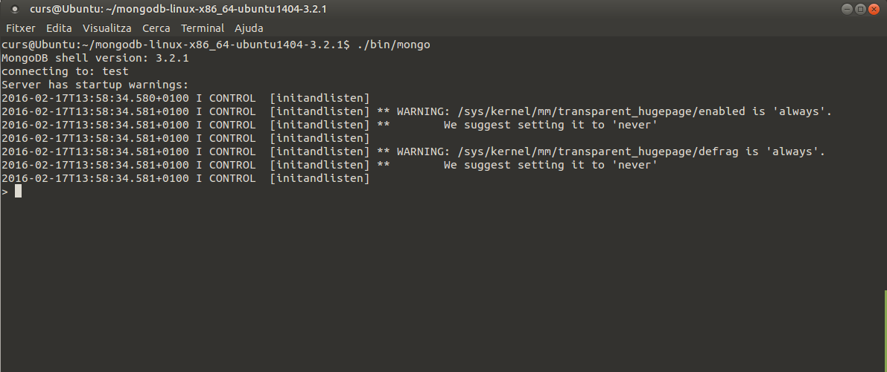

3 - MongoDB
Segurament MongoDB és el més famós dels Sistemes Gestors de Bases de Dades NoSQL.
El nom de MongoDB prové de la paraula anglesa humongous, que significa enorme, que és el propòsit d'aquesta Base de Dades: guardar grans quantitats d'informació. s de codi obert i est programada en C++. El va crear l'empresa 10gen (actualment MongoDB Inc.)
s un SGBD Documental , és a dir, que servir per a guardar documents. La manera interna de guardar-los és en format BSON (Binary JSON) que en essència és una variant del JSON per a poder guardar físicament les dades d'una manera més eficient.
En un servidor Mongo poden haver més d'una Base de Dades, encara que nosaltres només en gastarem una: test.
- En cada Base de Dades la informació es guardar en col·leccions.
- Cada col·lecció constar d'uns quants documents.
- I cada document seran una sèrie de dades guardades en forma de clau-valor , dels tipus suportats per MongoDB, i amb el format JSON (en realitat BSON)
Per tant, en Mongo no hi ha taules. Mirem uns exemples de documents JSON per a guardar la informació de llibres i autors. Depenen de com s'haja d'accedir a la informació ens podem plantejar guardar els llibres amb els seus autors, o guardar els autors, amb els seus llibres. Fins i tot ens podríem guardar els dos, per a poder accedir de totes les maneres, encara que és a costa de doblar la informació.
De la primera manera, guardant els llibres amb el seu autor, podríem tenir documents amb aquesta estructura, que es podrien guardar en una col·lecció anomenada Llibres :
{
_id:101,
titol:"El secret de Khadrell",
autor: {
nom:"Pep",
cognoms:"Castellano Puchol",
any_naixement:1960
},
isbn:"84-95620-72-3"
},
{
_id:102,
titol:"L'Ombra del Vent",
autor: {
nom:"Carlos",
cognoms:"Ruiz Zafon",
pais:"Espanya"
},
pagines:490,
editorial:"Planeta"
}
Observeu com els objectes no tenen per què tenir la mateixa estructura. La manera d'accedir al nom d'un autor seria aquesta: objecte.autor.nom
Una manera alternativa de guardar la informació, com havíem comentat abans seria organitzar per autors, amb els seus llibres. D'aquesta manera podríem anar omplint la col·lecció Autors amb un o més documents d'aquest estil:
{
_id: 201,
nom:"Pep",
cognoms:"Castellano Puchol",
any_naixement:1960,
llibres: [
{
titol:"El secret de Khadrell",
isbn:"84-95620-72-3"
},
{
titol:"Habitació 502",
editorial:"Tabarca"
}
]
},
{
_id:202,
nom:"Carlos",
cognoms:"Ruiz Zafon",
pais:"Espanya",
llibres: [
{
titol:"L'Ombra del Vent",
pagines:490,
editorial:"Planeta"
}
]
}
Observeu com per a un autor, ara tenim un array ( els claudtors: [ ]) amb els seus llibres.
Quina de les dues maneres és millor per a guardar la informació? Doncs depén de l'accés que s'haja de fer a les dades. La millor ser segurament aquella que depenent dels accessos que s'hagen de fer, torne la informació de forma més rpida.
3.1 - Estructura JSON
Amb JSON podrem representar:
- Valors , de tipus carcter (entre cometes dobles), numèric (sense cometes) , boole (true o false) o null.
- Parelles clau valor , és a dir un nom simbòlic acompanyat d'un valor associat.. Es representen així: "nom" : valor
- Objectes , que és una col·lecció de membres, cadascú dels quals pot ser una parella clau valor, o altres objectes (fins i tot arrays): es representen entre claus, i amb els elements separats per comes: { "nom1" : "valor1" , "nom2": valor2 , valor 3 , ... }
- Arrays , que són llistes d'elements. Els elements no tenen per què tenir la mateixa estructura, però nosaltres intentarem que sí que la tinguen per coherència. Cada element pot ser un valor , una parella clau valor, un objecte o un array.
Veje'm algun exemples:
{ "p1" : 2 , "p2" : 4 , "p3" : 6 , "p4" : 8 , "p5" : 10 }
en aquest cas tenim un objecte, l'arrel, que té 5 membres, tots ells parelles clau-valor.
{
"num": 1 ,
"nom": "Andreu" ,
"departament": 10 ,
"edat": 32 ,
"sou": 1000.0
}
ara un objecte, l'arrel, també amb 5 membres que són parelles clau-valor. Observeu com la clau sempre la posem entre cometes, i el valor quan és un string també, però quan és numèric, no.
{ "empleat" :
{ "num": 1 ,
"nom": "Andreu" ,
"departament": 10 ,
"edat": 32 ,
"sou": 1000.0
}
}
en aquest cas tenim un objecte, l'arrel que consta d'un únic objecte, empleat , el qual consta de 5 membres clau-valor.
Mirem ara un exemple amb un array:
{ "notes" :
[ 5 , 7 , 8 , 7 ]
}
on tenim l'element arrel que consta d'un únic membre, notes, que és un array.
També seria correcte d'aquesta manera, per veure que l'element arrel no té perquè ser un objecte, sinó també un array
[ 5 , 7 , 8 , 7 ]
I ara un més complet amb la mateixa estructura que el fitxer XML que havíem vist en la pregunta 4. Tindrem un objecte arrel, amb només un objecte, empresa , que té un únic element empleat que és un array amb 4 elements, cadascun dels empleats:
{ "empresa":
{ "empleat":
[ {
"num": "1",
"nom": "Andreu",
"departament": "10",
"edat": "32",
"sou": "1000.0"
},
{
"num": "2",
"nom": "Bernat",
"departament": "20",
"edat": "28",
"sou": "1200.0"
},
{
"num": "3",
"nom": "Clàudia",
"departament": "10",
"edat": "26",
"sou": "1100.0"
},
{
"num": "4",
"nom": "Damià",
"departament": "10",
"edat": "40",
"sou": "1500.0"
}
]
}
}
Anem a veure un parell de casos més reals. Aquesta és la contestació que fa el WebService de Bicicas en sol·licitar l'estat actual de bicicletes en els diferents punts (en el moment de fer els apunts es consulta en l'adreça http://gestiona.bicicas.es/apps/apps.php):
[
{"ocupacion":
[
{"id":"01","punto":"UJI -
FCHS","puestos":27,"ocupados":12,"latitud":"39.99533","longitud":"-0.06999",
"porcentajeAltaOcupacion":"80","porcentajeBajaOcupacion":"20"},
{"id":"02","punto":"ESTACIÓN DE FERROCARRIL Y
AUTOBUSES","puestos":24,"ocupados":7,"latitud":"39.98765","longitud":"-0.05281",
"porcentajeAltaOcupacion":"80","porcentajeBajaOcupacion":"20"},
{"id":"03","punto":"PLAZA DE
PESCADERÍA","puestos":28,"ocupados":4,"latitud":"39.98580","longitud":"-0.03798",
"porcentajeAltaOcupacion":"80","porcentajeBajaOcupacion":"20"},
...
]
}
]
Com podeu comprovar, l'arrel no és un objecte, sinó un Array. En l'array només ens interessa el primer element que és un objecte amb un únic membre, ocupacion(en l'exemple no hi ha més elements, però en poden haver més en un moment determinat, quan volen fer avisos). I ocupacion és un array , amb un objecte per cada estació de bicicas , amb les parelles clau valor id , punto , puestos (les bicicletes que caben), ocupados (quantes bicicletes hi ha col·locades en aquest moment), latitud i longitud (les coordenades), ...
Nota
En realitat ens apareixer tota la informació molt més apegada, perquè realment est en una única línia.
Per a poder observar millor l'estructura podem utilitzar un visor de json. Normalment el navegador Firefox els visualitza bé, encara que també depén de la versió. Si tenim instal·lada una versió que admet la visualització de JSON, ho intentar interpretar, encara que segurament la millor manera de veure el format JSON és,tiar les opcions Dades sense processar -- > Format d'impressió, que és la que veiem a la dreta:
 |
 |
|---|---|
Si la versió nostra de Firefox no visualitza el format JSON, podem buscar un visor dels molts que hi ha per internet. En la figura n'hem utilitzat un, i es pot observar com facilita molt la lectura.

Un altre exemple. Un WebService de GeoNames (una Base de Dade geogrfica gratuïta i accessible a través d'Internet) ens proporciona informació dels llocs que troba dins d'un rectangle delimitat per un latitud al nord i al sud, i una longitud a l'esti a l'oest (en l'exemple: nord 40.01, sud 39.9, est 0.1 i oest -0.1). Per exemple, http://api.geonames.org/citiesJSON?north=40.01&south=39.99&east=0.01&west=-0.01&lang=ES&username=demo torna el següent:
{
"geonames": [
{
"lng": -0.04935,
"geonameId": 2519752,
"countrycode": "ES",
"name": "Castelló de la Plana",
"fclName": "city, village,...",
"toponymName": "Castelló de la Plana",
"fcodeName": "seat of a second-order administrative division",
"wikipedia": "en.wikipedia.org/wiki/Castell%C3%B3n_de_la_Plana",
"lat": 39.98567,
"fcl": "P",
"population": 180005,
"fcode": "PPLA2"
},
{
"lng": -0.06313,
"geonameId": 2521909,
"countrycode": "ES",
"name": "Almazora",
"fclName": "city, village,...",
"toponymName": "Almassora",
"fcodeName": "populated place",
"wikipedia": "en.wikipedia.org/wiki/Almassora",
"lat": 39.94729,
"fcl": "P",
"population": 24963,
"fcode": "PPL"
},
...
]
}
A partir de l'arrel (que ara sí que és un objecte), tenim un membre: geonames, que és un array (un element per cada "lloc" trobat), on cada element té informació diversa, com el nom del lloc, les coordenades, la població, ...
Nota
De fa uns mesos que Google limita el servei anterior, i ha de ser amb un usuari validat. No valdr la pena, per al poc profit que li trauríem. Mostrem en què consisteix el servei únicament a nivell il·lustratiu
3.2 - Instal·lació de MongoDB
Podrem instal·lar MongoDB en qualsevol plataforma. I fins i tot sense tenir permisos d'administrador, com veurem en el cas d'Ubuntu.
També est la possibilitat de crear un servidor en el núvol, fins i tot gratuït. s l'opció que ens suggereix Mongo per defecte, però nosaltres no la utilitzarem.
Instal·lació en Linux
Per a poder fer la instal·lació més bsica, podrem fer-lo sense permisos d'administrador. Si els tenim tot és més còmode, però si no en tenim també ho podem fer, com veurem i remarcarem a continuació.
Pas 1. Instal·lació del servidor (Linux)
1- De la pgina de MongoDB (https://www.mongodb.com/try/download/community) anem al menú Products - > Comunity Edition ->Comunity Server i ens baixem la versió apropiada per al nostre Sistema Operatiu. Observeu com en el cas de Linux hi ha moltes versions, per a moltes distribucions. I millor triar el paquet tgz, ja que amb descomprimir el fitxer ser suficient. En el cas d'Ubuntu 22.04 de 64 bits , aquest fitxer és: https://fastdl.mongodb.org/linux/mongodb-linux-x86_64-ubuntu2204-8.0.5.tgz. Però recordeu que us heu d'assegurar de la versió.
2- Descomprimirem aquest fitxer on vulguem, i ja estar feta la instal·lació bsica.
3- Es necessari tindre un directori de dades per emmagatzemar la base de dades. Creem el directori de dades en el directori arrel (carpeta d'instal·lació).
mkdir data
mkdir data/db
4- Arranquem el servidor:
<directori arrel Mongo> /bin/mongod
./bin/mongod --dbpath ./data/db
La següent imatge il·lustra aquesta segona opció. Est per a una versió anterior de MongoDB, però és totalment equivalent:

Nota
Una vegada en marxa el servidor, no hem de tancar aquesta terminal, ja que pararíem el servidor.
Pas 2. Instal·lació del client MongoShell (Linux)
1- De la pgina de MongoDB (https://www.mongodb.com/try/download/shell) anem al menú Products - > Tools ->MongoDB Shell i ens baixem la versió apropiada per al nostre Sistema Operatiu. Observeu com en el cas de Linux hi ha moltes versions, per a moltes distribucions, i millor triar el paquet tgz, ja que amb descomprimir el fitxer ser suficient. En el cas d'Ubuntu 22.04 de 64 bits , triarem l'opió genèrica Linux 64 ja que és la opció que té el paquet tgz, i aquest fitxer és: https://downloads.mongodb.com/compass/mongosh-2.4.0-linux-x64.tgz. Però recordeu que us heu d'assegurar de la versió.
2- Descomprimirem aquest fitxer on vulguem, i ja estar feta la instal·lació bsica.
3- Per a connectar un client, obrim una segona terminal i executem el client mongosh :
<directori arrel Mongosh>/bin/mongosh
./bin/mongosh

🖥️Instal·lació en Windows
Pas 1. Instal·lació del servidor (Windows)
1- Ens baixem la versió apropiada de MongoDB per a Windows, que resultar ser un .msi directament executable. En el moment de fer aquestos apunts, la versió de 64 bits és la 8.0.5:
https://fastdl.mongodb.org/windows/mongodb-windows-x86_64-8.0.5-signed.msi
2- Com en el cas de Linux, abans d'executar el servidor haurem de tenir el directori creat. Per defecte el directori ser \data\db
3- Aqueste serien les ordres per a crear el directori i després arrancar el servidor.
mkdir \data\db
C:\Program Files\MongoDB\Server\8.0\bin\mongod.exe
Hauria d'aparèixer la imatge següent

Nota
Si vas instal·lar MongoDB amb el MongoDB MSI Installer, normalment el servei ja estar instal·lat i no caldr executar-lo.
Pas 2. Instal·lació del client MongoShell (Windows)
1- Per a connectar-nos com a clients, ho haurem de fer des d'una altra terminal, amb mongosh.exe, que és la interfície de línia d'ordres (CLI) oficial de MongoDB, utilitzada per interactuar amb la base de dades mitjançant ordres en JavaScript:
Ens baixem la versió apropiada de MongoDB per a Windows
https://downloads.mongodb.com/compass/mongosh-2.4.0-linux-x64.tgz
Mongo Compass
També us podeu descarregar la versió MongoDB Compass, que és l'eina grfica oficial de MongoDB que permet visualitzar, explorar i administrar bases de dades de MongoDB sense necessitat d'utilitzar la línia de comandos.
https://downloads.mongodb.com/compass/mongodb-compass-1.45.3-win32-x64.exe
3.3 - Funcionament de MongoDB
Recordeu que tindrem dues teminals:
- Una amb el servidor en marxa (i que no hem de tancar): mongod
- Una altra amb el client que es connecta al servidor: mongosh
Probar el funcionament
Per a provar el seu funcionament, anem a fer alguns comandos:

- Mostrar la versió del servidor MongoDB =>
db.version() - Mostrar totes les bases de dades en el teu servidor MongoDB =>
show dbs - Mostrar el nom de la BD del servidor MongoDB =>
db.getName() - Mostrar totes les col·leccions en la base de dades seleccionada =>
show collections
3.4 - Utilització de variables
Com comentvem el que més utilitzarem del llenguatge Javascript és la utilització de variables, que ens pot ser molt útil en algunes ocasions. Podrem utilitzar-les durant la sessió, però evidentment no perduraran d'una sessió a l'altra.
Per a definir una variable podem posar opcionalment davant la paraula reservada var , però no és necessari. Posarem el nom de la variable, el signe igual, i a continuació el valor de la variable, que pot ser una constant, o una expressió utilitzant constants, operadors, altres variables, funcions de Javascript, ...
Especialment interessant són les variables que poden contenir un document JSON.
Per exemple:
> a = 30
30
> b = a/4
7.5
> Math.sqrt(b)
2.7386127875258306
> doc = {camp1: "Hola", camp2: 45, camp3: new Date()}
{
"camp1" : "Hola",
"camp2" : 45,
"camp3" : ISODate("2022-01-16T18:07:51.118Z")
}
>
Una variable de tipus JSON es podr modificar molt fcilment, tota ella, o algun dels elements. Per a arribar als elements posarem nom_variable.nom_camp :
> doc.camp4 = 3.141592
3.141592
> doc.camp5 = [ 2 , 4 , 6 , 8]
[ 2, 4, 6, 8 ]
I si ara intentem traure el contingut de la variable:
> doc
{
"camp1" : "Hola",
"camp2" : 45,
"camp3" : ISODate("2022-01-16T18:07:51.118Z"),
"camp4" : 3.141592,
"camp5" : [
2,
4,
6,
8
]
}
>
També hem de fer constar que en un document, que ser de tipus JSON (prcticament), ser un conjunt de parelles clau-valor, amb algunes restriccions:
- El document (que moltes vegades l'associarem a objecte de JSON) va entre claus ( { } )
- Els elements d'un objecte van separats per comes, i són parelles clau-valor.
- La clau no pot ser nula, ni repetir-se en el mateix objecte (sí en diferents objectes, clar)
- Els valors són dels tipus que veurem en l'apartat següent.
- Un document guardat ha de contenir obligatòriament un camp anomenat _id , i que contindr un valor únic en la col·lecció i servir per a identificar-lo. Si en guardar un document no li hem posat camp _id , el generar automticament MongoDB.
3.5 - Tipus de dades
Els valors dels elements, és a dir de les parelles clau valor, poden ser d'uns quants tipus. Fem un rpid reps.
En els exemples que van a continuació definim senzillament parelles clau-valor dels diferents tipus, o en tot cas ens ho guardem en variables, però no guardarem encara en la Base de Dades (ho farem en la següent pregunta).
Quan guardem en una variable es mostrar el prompt, la definició de la variable i després el resultat d'haver guardat la variable. Utilitzarem requadres blancs. Els requadres grocs són únicament de la definició d'una clau-valor d'un determinat tipus
NULL
Més que un tipus de dades és un valor, millor dit, l'absència de valor
{ "x" : null }
BOOLEAN
El tipus boole, que pot agafar els valors true o false.
{ "x" : true }
{ "y" : false }
NUMBER
Per defecte, el tiups de dades numèrics ser el de coma flotant (float), simple precisió. Si volem un altre tiups (enter, doble precisió, ...) ho haurem d'indicar expressament. Així els dos següents valors són float:
{ "x" : 3.14 }
{ "y" : 3 }
Si volem que siga estrictament enter, per exemple, haurem d'utilitzar una funció de conversió:
{ "x" : NumberDouble("3.14") }
{ "y" : NumberInt("3") }
STRING
Es pot guardar qualsevol cadena amb carcters de la codificació UTF-8
{ x : "Hola, què tal?"}
DATE
Es guarda data i hora, i internament es guarden en milisegons des de l'any inicial. No es guarda el Time zone , és a dir, la desviació respecte a l'hora internacional.
{ x : ISODate("2022-01-16T11:15:27.471Z") }
Normalment utilitzarem funcions de tractament de la data-hora. L'anterior era per a convertir el string en data-hora. La següent és per a obtenir la data- hora actual:
{ x : new Date() }
s a dir, que si no posem parmetre, ens dóna la data-hora actual. Però li podem posar com a parmetre la data-hora que volem que genere. En aquest exemple, només posem data, per tant l'hora ser les 00:00:
> z = new Date("2022-01-16")
ISODate("2022-01-16T00:00:00Z")
En aquest sí que posem una determinada hora, i observeu com hem deposar la T (Time) entre el dia i l'hora:
> z = new Date("2022-02-16T18:00")
ISODate("2022-01-16T18:00:00Z")
s molt important que posem sempre New Date() per a generar una data-hora. Si posem únicament Date() , el que estem generant és un string (segurament amb la data i hora actual, però un string):
> z = Date("2022-01-16")
Sun Jan 16 2022 22:20:09 GMT+0100 (CET)
ARRAY
s un conjunt d'elements, cadascun de qualsevol tipus, encara que el més habitual és que siguen del mateix tipus. Van entre claudtors ([ ]) i els elements separats per comes.
{ x : [ 2 , 4 , 6 , 8 ] }
Com comentvem, cada element de l'array pot ser de qualsevol tipus:
{ y : [ 2 , 3.14 , "Hola" , new Date() ] }
En MongoDB podrem treballar molt bé amb arrays, i tindrem operacions per a poder buscar dins de l'array, modificar un element, crear índex, ...
DOCUMENTS (OBJECTES)
Els documents poden contenir com a elements uns altres documents (objectes en la terminologia JSON, però documents en la terminologia de MongoDB).
Van entre claus ( { } ), i els elements que contindran van separats per comes i seran parelles clau-valor de qualsevol tipus (fins i tot altres documents).
{ x : { a : 1 , b : 2 } }
Posar documents dins d'uns altres documents (el que s'anomena embedded document) ens permet guardar la informació d'una manera més real, no tan plana. Així per exemple, les dades d'una persona les podríem definir de la següent manera. Les posarem en una variable, per veure després com podem accedir als diferents elements, encara que el més normal ser guardar-lo en la Base de Dades (amb insert()). Si copiem el que va a continuació al terminal de Mongo, ens apareixer amb un format estrany. s perquè la sentència d'assignació a la variable ocupa més d'una línia, i apareixeran 3 punts al principi per a indicar que continua la sentència. Però funcionar perfectament :
doc = {
nom:"Joan Martí",
adreça: {
carrer:"Major",
número:1,
població:"Castelló"
} ,
telèfons : [964223344,678345123]
}
Observeu com aquesta estructura que ha quedat tan clara, segurament en una Base de Dades Relacional ens hauria tocat guardar en 3 taules: la de persones, la d'adreces i la de telèfons.
Per a accedir als elements d'un document posvem el punt. Doncs el mateix per als elements d'un document dins d'un document. I també podem accedir als elements d'un array, posant l'índex entre claudtors.
> doc.nom
Joan Martí
> doc.adreça
{ "carrer" : "Major", "número" : 1, "població" : "Castelló" }
> doc.adreça.carrer
Major
> doc.telèfons
[ 964223344, 678345123 ]
> doc.telèfons[0]
964223344
OBJECT ID
s un tipus que defineix MongoDB per a poder obtenir valors únics. s el valor per defecte de l'element _id , necessari en tot document (atenció: en un document, no en un element de tipus document que hem dit equivalent a l'objecte de JSON). s un número long, és a dir que utilitza 24 bytes.
Farem proves de la seua utilització en la seüent pregunta, en el moment d'inserir diferents documents.
3.6 - Operacions CRUD Bsiques
En aquest punt anem a veure les operacions més bsiques, per a poder treballar sobre exemples prctics, i així disposar ja d'unes dades inicials per a practicar.
Creació: insert
MongoDB proporciona els mètodes següents per inserir documents en una col·lecció:
-
db.collection.insertOne()
-
db.collection.insertMany()

La funció insert afegir documents a una col·lecció. En el parmetre posem el document directament, o una variable que continga el document. Si la col·lecció no existia, la crear i després afegir el document. En la següent sentència estem treballant sobre la col·lecció exemple , que segurament ja existir de quan vam fer la pregunta 3.1 d'instal·lació de MongoDB, que per a provar vam inserir un document. Però si no existia, la crear sense problemes.
> db.exemple.insertOne({ msg : "Hola, què tal?"})
Acabem d'inserir un nou document, i així ens ho avisa ( { "nInserted" : 1 } , s'ha inserit un document). Automticament haur creat un element _id de tipus ObjectId , ja que li fa falta per a identificar el document entre tots els altres de la col·lecció.
Insertem un altre document:
> db.exemple.insertOne({ msg2 : "Com va la cosa?"})
I en aquest exemple ens guardem el document en la variable doc , i després l'inserim
> doc = { msg3 : "Per ací no ens podem queixar ..."}
> db.exemple.insertOne(doc)
També ens indica que ha inserit un document. I haur creat també el camp _id com veurem en el següent punt.
Inserció especificant el id
En els document que hem inserit fins el moment, no hem especificat el camp _id , i Mongo l'ha generat automticament de tipus ObjectId.
Però nosaltres podrem posar aquest camp _id amb el valor que vulguem. Això sí, haurem d'estar segurs que aquest valor no l'agafa cap altre document de la col·lecció, o ens donar un error.
Així per exemple anem a inserir la informació d'uns alumnes. Els posarem en una col·lecció nova anomenada alumnes , i els intentarem posar un _id personal. Per exemple posarem els números 51, 52, 53, ...
> db.alumnes.insertOne ({_id: 51 , nom: "Rebeca" , cognoms: "Martí Peral"})
Ha anat bé, i si mirem els documents que tenim en la col·lecció, comprovarem que ens ha respectat el _id :
> db.alumnes.find()
{ "_id" : 51, "nom" : "Rebeca", "cognoms" : "Martí Peral" }
Però si intentem inserir un altre document amb el mateix _id (51), ens donar error:
> db.alumnes.insertOne ({_id: 51 , nom: "Raquel" , cognoms: "Gomis Arnau"})
WriteResult({
"nInserted" : 0,
"writeError" : {
"code" : 11000,
"errmsg" : "E11000 duplicate key error collection: test.alumnes index: _id_
dup key: { : 51.0 }"
}
})
>
Ens avisa que estem duplicant la clau principal , és a dir l'identificador.
Inserció múltiple
Quan els documents que volem inserir són senzills, podem inserir més d'un a la vegada, posant dis del insertMany() un array amb tots els elements. En el següent exemple creem uns quants nombres primers en la col·lecció del mateix nom:
> db.nombresprimers.insertMany( [ {_id:2} , {_id:3} , {_id:5} , {_id:7} , {_id:11}
> , {_id:13} , {_id:17} , {_id:19} ] )
BulkWriteResult({
"writeErrors" : [ ],
"writeConcernErrors" : [ ],
"nInserted" : 8,
"nUpserted" : 0,
"nMatched" : 0,
"nModified" : 0,
"nRemoved" : 0,
"upserted" : [ ]
})
>
Ens avisa que ha fet 8 insercions, i ací els tenim:
> db.nombresprimers.find()
{ "_id" : 2 }
{ "_id" : 3 }
{ "_id" : 5 }
{ "_id" : 7 }
{ "_id" : 11 }
{ "_id" : 13 }
{ "_id" : 17 }
{ "_id" : 19 }
>
Lectura: find
MongoDB ofereix els mètodes següents per llegir documents d'una col·lecció:
- db.collection.find()
recuperar tots els documents de la col·lecció, encara que podrem posar criteris per a que ens torne tots els documents que acomplesquen aquestos criteris (ho veurem més avant).
Exemple:
> db.exemple.find()
{ "_id" : ObjectId("56ce310bc61e04ba81def50b"), "msg" : "Hola, què tal?" }
{ "_id" : ObjectId("56ce31f6c61e04ba81def50c"), "msg2" : "Com va la cosa?" }
{ "_id" : ObjectId("56ce3237c61e04ba81def50d"), "msg3" : "Per ací no ens podem queixar ..." }
>
En tots els casos podem comprovar que és cert el que veníem afirmant, que ha creat automticament l'element _id per a cada document guardat. Evidentment, cadascú de nosaltres tindr una valors diferents.
Eliminació: delete
Per a esborrar un document d 'una col·lecció utilitzarem la funció deleteOne , passant-li com a parmetre la condició del document o documents a esborrar. MongoDB ofereix els mètodes següents per eliminar documents d'una col·lecció:
-
db.collection.deleteOne()
-
db.collection.deleteMany()
> db.nombresprimers.deleteOne( {"_id" : 19} )
Ens avisa que ha esborrat un document.
La condició no cal que siga sobre el camp _id. Pot ser sobre qualsevol camp, i esborrar tots els que coincideixen.
> db.exemple.deleteMany( {"msg3" : "Per ací no ens podem queixar ..."} )
També tenim la possibilitat d'esborrar tota una col·lecció amb la funció drop(). Pareu atenció perquè és molt senzilla d'eliminar, i per tant, potencialment molt perillosa.
> db.nombresprimers.drop()
true
>
Actualització - update
La funció update servir per a actualitzar un document ja guardat. Tindr dos parmetres:
- El primer parmetre ser la condició per a trobar el document que s'ha d'actualitzar.
- El segon parmetre ser el nou document que substituir l'anterior
MongoDB ofereix els mètodes següents per actualitzar els documents d'una col·lecció:
-
db.collection.updateOne()
-
db.collection.updateMany()
-
db.collection.replaceOne()

Per exemple, si mirem les dades actuals:
> db.exemple.find()
{ "_id" : ObjectId("56ce310bc61e04ba81def50b"), "msg" : "Hola, què tal?" }
{ "_id" : ObjectId("56ce31f6c61e04ba81def50c"), "msg2" : "Com va la cosa?" }
Podem comprovar el contingut del segon document, el que te msg2. Anem a modificar-lo: en el primer parmetre posem condició de recerca (només hi haur un) i en el segon posem el nou document que substituir l'anterior amb el parmetre $set.
> db.exemple.updateOne( {msg2:"Com va la cosa?"} , {$set: {msg2:"Què? Com va la cosa?"}})
Observeu que la contestació del update() és que ha fet match (hi ha hagut coincidència) amb un document, i que ha modificat un. Si no en troba cap, no donar error, senzillament dir que ha fet match amb 0 documents, i que ha modificat 0 documents. Mirem com efectivament ha canviat el segon document
> db.exemple.find()
{ "_id" : ObjectId("56ce310bc61e04ba81def50b"), "msg" : "Hola, què tal?" }
{ "_id" : ObjectId("56ce31f6c61e04ba81def50c"), "msg2" : "Què? Com va la cosa?" }
Ens vindran molt bé les variables per a les actualitzacions, ja que en moltes ocasions ser modificar lleugerament el document, canviant o afegint algun element. Ho podrem fer còmodament amb la variable: primer guardem el document a modificar en una variable; després modifiquem la variable; i per últim fem l'operació d'actualització. Evidentment si tenim alguna variable amb el contingut del document ens podríem estalviar el primer pas.
> doc1 = db.exemple.find()
{ "_id" : ObjectId("56ce310bc61e04ba81def50b"), "msg" : "Hola, què tal?" }
> doc1.titol = "Missatge 1"
Missatge 1
> db.exemple.updateOne( {msg:"Hola, què tal?"} , doc1)
WriteResult({ "nMatched" : 1, "nUpserted" : 0, "nModified" : 1 })
> db.exemple.findOne()
{
"_id" : ObjectId("56ce310bc61e04ba81def50b"),
"msg" : "Hola, què tal?",
"titol" : "Missatge 1"
}
>
Reemplaçar un document
Per reemplaçar tot el contingut d'un document excepte el _id, passeu un document completament nou com a segon argument a Collection.replaceOne().
En reemplaçar un document, aquest ha de constar únicament de parells camp-valor. No podeu incloure expressions d'operadors d'actualització.
El document de substitució pot tenir camps diferents dels del document original. Al document de reemplaçament, podeu ometre el _id, ja que _id es immutable. No obstant això, si l'inclou _id, heu de tenir el mateix valor que l'actual.
db.exemple.replaceOne(
{ "msg" : "Hola, què tal?" },
{ "msg" : "Hola, què tal?" , "titol2" : "Missatge 2" }
)
3.7 - Operadors d'actualització
En el apartat anterior hem vist l'actualització de documents ja existents a la Base de Dades. Aquesta actualització la féiem modificant tot el document, encara que tenim la variant de guardar el document en una variable, modificar aquesta variable i després fer l'actualització amb aquesta variable. Però observeu que continua sent una modificació de tot el document, una substitució del document antic per un document nou.
En aquest apartat veurem la utilització d'uns modificadors (modifiers) de l'operació update(), que ens permetran modificar documents de forma potent: creant i eliminant claus (elements) d'un document, o canviant-los, i fins i tot afegir o eliminar elements d'un array.
$set
El modificador $set assigna un valor a un camp del document seleccionat de la Base de Dades. Si el camp ja existia, modificar el valor, i si no existia el crear.
La sintaxi del modificador $set és la següent:
{ $set : { clau : valor} }
Però recordeu que és un modificador, i l'hem d'utilitzar dins d'una operació d'actualització. Anir en el segon parmetre del update() , i per tant amb aquestos modificadors ja no posem tot el document en el segon parmetre, sinó únicament l'operador de modificació.
Mirem-ho millor en un exemple:
> db.alumnes.insertOne( {nom:"Abel", cognoms:"Bernat Carrera"} )
> db.alumnes.find()
{
"_id" : ObjectId("56debe3017bf4ed437dc77c8"),
"nom" : "Abel",
"cognoms" : "Bernat Carrera"
}
>
Suposem ara que li volem afegir l'edat. Abans ho faríem guardant el document en una variable, i afegint el camp, per a guardar després. Ara ho tenim més fcil:
> db.alumnes.updateOne( {nom:"Abel"} , { $set: {edat:21} } )
Ha trobat un, i l'ha modificat. Evidentment, si hi haguera més d'un alumne a mb el nom Abel, els modificaria tots.
> db.alumnes.find()
{
"_id" : ObjectId("56debe3017bf4ed437dc77c8"),
"nom" : "Abel",
"cognoms" : "Bernat Carrera",
"edat" : 21
}
Es pot especificar més d'un camp amb els valor corresponents. Si no existien es crearan, i si ja existien es modificaran:
> db.alumnes.updateOne( {nom:"Abel"} , { $set: {nota: 8.5 , edat:22} } )
> db.alumnes.find()
{
"_id" : ObjectId("56debe3017bf4ed437dc77c8"),
"nom" : "Abel",
"cognoms" : "Bernat Carrera",
"edat" : 22,
"nota" : 8.5
}
I fins i tot es pot canviar el tipus d'un camp determinat, i utilitzar arrays, i objectes, ...
> db.alumnes.updateOne( {nom:"Abel"} , { $set: {nota: [8.5,7.5,9], adreça:{carrer:"Major",numero:7,cp:"12001"} } } )
> db.alumnes.find()
{
"_id" : ObjectId("56debe3017bf4ed437dc77c8"),
"nom" : "Abel",
"cognoms" : "Bernat Carrera",
"edat" : 22,
"nota" : [
8.5,
7.5,
9
],
"adreça" : {
"carrer" : "Major",
"numero" : 7,
"cp" : "12001"
}
}
Podem fins i tot modificar ara només el valor d'un camp d'un objecte del document. Per exemple, anem a modificar el codi postal de l'anterior alumne. La manera d'arribar al codi postal ser adreça.cp , però haurem d'anar amb compte que vaja entre cometes per a que el trobe:
> db.alumnes.updateOne( {nom:"Abel"} , { $set: {adreça.cp:"12502"} } )
uncaught exception: SyntaxError: missing : after property id :
@(shell):1:49
> db.alumnes.updateOne( {nom:"Abel"} , { $set: {"adreça.cp":"12502"} } )
> db.alumnes.find()
{
"_id" : ObjectId("56debe3017bf4ed437dc77c8"),
"nom" : "Abel",
"cognoms" : "Bernat Carrera",
"edat" : 22,
"nota" : [
8.5,
7.5,
9
],
"adreça" : {
"carrer" : "Major",
"numero" : 7,
"cp" : "12502"
}
}
$unset
El modificador $unset servir per a eliminar elements (camps) d'un o uns documents. Si el camp existia, l'eliminar, i si no existia, no donar error (avisar que s'han modificat 0 documents).
La sintaxi és:
{ $unset : {camp : 1 } }
Haurem de posar un valor al camp que anem a esborrar per a mantenir la sintaxi correcta, i posem 1 que equival a true. També podríem posar -1, que equival a false, però aleshores no l'esborraria, i per tant no faríem res. Sempre posarem 1.
Mirem el següent exemple. Afegim un camp, que ser el número d'ordre, i després el llevarem.
> db.alumnes.updateOne( {nom:"Abel"} , { $set: {num_ordre:10} } )
> db.alumnes.find()
{
"_id" : ObjectId("56debe3017bf4ed437dc77c8"),
"nom" : "Abel",
"cognoms" : "Bernat Carrera",
"edat" : 22,
"nota" : [
8.5,
7.5,
9
],
"adreça" : {
"carrer" : "Major",
"numero" : 7,
"cp" : "12502"
},
"num_ordre" : 10
}
> db.alumnes.updateOne( {nom:"Abel"} , { $unset: {num_ordre:1} } )
> db.alumnes.updateOne( {nom:"Abel"} , { $unset: {puntuacio:1} } )
Hem afegit primer el camp num_ordre , i hem mostrat el document per comprovar que existeix. Després esborrem el camp num_ordre (i ens confirma que ha modificat un document). Després intentem esborrar un camp que no existeix, puntuacio. No dóna error, però ens avisa que ha modificat 0 documents. Podem comprovar al final com el document ha quedat com espervem.
> db.alumnes.find()
{
"_id" : ObjectId("56debe3017bf4ed437dc77c8"),
"nom" : "Abel",
"cognoms" : "Bernat Carrera",
"edat" : 22,
"nota" : [
8.5,
7.5,
9
],
"adreça" : {
"carrer" : "Major",
"numero" : 7,
"cp" : "12502"
}
}
$rename
El modificador $rename canviar el nom d'un camp. Si no existia, no donar error i senzillament no el modificar. Hem de cuidar de posar el nou nom del camp entre cometes, per a que no done error.
La sintaxi és:
{ $rename : { camp1 : "nou_nom1" , camp2 : "nou_nom2" , ... } }
Per exemple, canviem el nom del camp nota a notes :
> db.alumnes.updateOne( {nom:"Abel"} , { $rename: {nota:"notes"} } )
> db.alumnes.find()
{
"_id" : ObjectId("56debe3017bf4ed437dc77c8"),
"nom" : "Abel",
"cognoms" : "Bernat Carrera",
"edat" : 22,
"adreça" : {
"carrer" : "Major",
"numero" : 7,
"cp" : "12502"
},
"notes" : [
8.5,
7.5,
9
]
}
Observeu que l'ha canviat de lloc, cosa que ens fa pensar que en canviar de nom un camp, el que fa és tornar a crear-lo amb el nou nom, i esborrar el camp antic.
En aquest exemple tornem a canviar el nom a nota , i intentem canviar el nom a un camp inexistent, camp1. No donar error.
> db.alumnes.updateOne( {nom:"Abel"} , { $rename: {camp1: "camp2" , notes:"nota"} } )
> db.alumnes.find()
{
"_id" : ObjectId("56debe3017bf4ed437dc77c8"),
"nom" : "Abel",
"cognoms" : "Bernat Carrera",
"edat" : 22,
"adreça" : {
"carrer" : "Major",
"numero" : 7,
"cp" : "12502"
},
"nota" : [
8.5,
7.5,
9
]
}
$inc
Com cabria esperar, el modificador $inc servir per a incrementar un camp numèric. Si el camp existia, l'incrementar en la quantitat indicada. Si no existia, crear el camp amb un valor inicial de 0, i incrementar el valor amb la quantitat indicada. La quantitat pot ser positiva, negativa o fins i tot amb part fraccionria. Sempre funcionar bé, excepte quan el camp a incrementar no siga numèric, que donar error.
La sintaxi és aquesta:
{ $inc : {camp : quantitat } }
En els següents exemples, incrementem un camp nou (per tant el crear amb el valor especificat), i després l'incrementem en quantitats positives, negatives i fraccionries, concretament l'inicialitzem amb un 2 , i despés l'incrementem en 5 , en -4 i en 2.25 , per tant el resultat final ser 5.25 :
> db.alumnes.updateOne( {nom:"Abel"} , { $inc: {puntuacio:2} } )
> db.alumnes.find()
{
"_id" : ObjectId("56debe3017bf4ed437dc77c8"),
"nom" : "Abel",
"cognoms" : "Bernat Carrera",
"edat" : 22,
"nota" : [
8.5,
7.5,
9
],
"adreça" : {
"carrer" : "Major",
"numero" : 7,
"cp" : "12502"
},
"puntuacio" : 2
}
> db.alumnes.updateOne( {nom:"Abel"} , { $inc: {puntuacio:5} } )
> db.alumnes.updateOne( {nom:"Abel"} , { $inc: {puntuacio:-4} } )
> db.alumnes.updateOne( {nom:"Abel"} , { $inc: {puntuacio:2.25} } )
> db.alumnes.find()
{
"_id" : ObjectId("56debe3017bf4ed437dc77c8"),
"nom" : "Abel",
"cognoms" : "Bernat Carrera",
"edat" : 22,
"nota" : [
8.5,
7.5,
9
],
"adreça" : {
"carrer" : "Major",
"numero" : 7,
"cp" : "12502"
},
"puntuacio" : 5.25
}
$min
Actualitza el valor del camp a un valor especificat si aquest és menor que el valor actual del camp.
db.alumnes..updateOne( { nom:"Abel"}, { $min: { puntuacio: 1 } } )
El valor de puntuació s'actualitza a 1 perquè és menor que el valor actual de 5.
$max
Actualitza el valor del camp a un valor especificat si aquest és major que el valor actual del camp.
db.alumnes..updateOne( { nom:"Abel"}, { $max: { puntuacio: 7 } } )
El valor de puntuació s'actualitza a 7 perquè és menor que el valor actual de 1.
$mul
Multiplica el valor d'un camp per un número., $currentDate
db.alumnes.updateOne({ nom:"Abel"},{ $mul: {puntuacio: 2}})
L'operador $mul multiiplica el camp puntuació per 2.
Arrays
Per a accedir directament a un element d'un array d'un determinat document es pot utilitzar la següent sintaxi:
"array.index"
Hem de tenir present que el primer element de l'array és el de subíndex 0. I no us oblideu de tancar-ho tot entre comentes per a que ho puga trobar.
Si no existeix l'element amb el subíndex indicat, donar error.
Per exemple, anem a pujar un punt la primera nota de l'alumne que estem utilitzant en tots els exemples :
>db.alumnes.updateOne( {nom:"Abel"} , { $inc : { "nota.0" : 1 } } )
> db.alumnes.find()
{
"_id" : ObjectId("56df11d778549bdfbf2125e3"),
"nom" : "Abel",
"cognoms" : "Bernat Carrera",
"edat" : 22,
"adreça" : {
"carrer" : "Major",
"numero" : 7,
"cp" : "12502"
},
"nota" : [
9.5,
7.5,
9
]
}
Actualització: $ y $[]
$
Identifica un element en un array per actualitzar sense especificar explícitament la posició de l'element en un array.
Ejemplo: Modificar la primera nota mayor a 8 en el array nota
db.alumnes.updateOne(
{ "_id": ObjectId("56df11d778549bdfbf2125e3"), "nota": { $gt: 8 } },
{ $set: { "nota.$": 10 } }
)
$[]
L'operador $[] es fa servir per actualitzar tots els elements en un array.
Ejemplo: Aumentar en 1 punto todas las notas en el array nota
db.alumnes.updateOne(
{ "_id": ObjectId("56df11d778549bdfbf2125e3") },
{ $inc: { "nota.$[]": 1 } }
)
Inserció: $push
La manera més senzilla d'introduir un element en un array és utilitzar $push sense més. Si existia l'array, introduir el o els nous elements al final. Si no existia l'array, el crear amb aquest o aquestos elements.
La sintaxi és:
{ $push : { clau : element } }
Per exemple anem a afegir una nota a l'alumne de sempre, i posem-la diferent per veure que s'introdueix al final:
> db.alumnes.updateOne( {nom:"Abel"} , { $push : { nota : 7 } } )
> db.alumnes.find()
{
"_id" : ObjectId("56df11d778549bdfbf2125e3"),
"nom" : "Abel",
"cognoms" : "Bernat Carrera",
"edat" : 22,
"adreça" : {
"carrer" : "Major",
"numero" : 7,
"cp" : "12502"
},
"nota" : [
9.5,
7.5,
9,
7
]
}
També hi ha manera d'introduir un element en una determinada posició que no siga al final, però es complica prou la cosa, ja que hem d'utilitzar per una banda el modificador $position per a dir on s'ha d'inserir, i per una altra banda el modificador $each per a poder especificar el o els valors que es volen inserir. Es posa a continuació únicament de forma il·lustrativa.
Per a inserir en una determinada posició hem d'utilitzar obligatòriament 2 modificadors més:
- $position indicar a partir de quina posició es far l'acció (normalment d'inserir en l'array, és a dir, $push)
- $each ens permet especificar una sèrie de valors com un array, i vol dir que es far l'operació per a cada valor de l'array
Els dos modificadors seguiran la sintaxi de sempre, de clau valor, per tant el conjunt de la sintaxi és:
{ $ push :
{ clau_del_array :
{ $position : _posició_ ,
$each : [ _valors_ ]
}
}
}
Ací tenim un exemple on introduïm una nota en la primera posició:
> db.alumnes.updateOne( {nom:"Abel"} , { $push : { nota : { $position : 0 , $each
> : [5] } } } )
> db.alumnes.find()
{
"_id" : ObjectId("56df11d778549bdfbf2125e3"),
"nom" : "Abel",
"cognoms" : "Bernat Carrera",
"edat" : 22,
"adreça" : {
"carrer" : "Major",
"numero" : 7,
"cp" : "12502"
},
"nota" : [
5,
9.5,
7.5,
9,
7
]
}
Eliminació: $pop i $pull
Hi ha més d'una manera d'eliminar elements d'un array.
$pop
Si volem eliminar el primer element o l'últim, el modificador adequat és $pop. La sintaxi és
{ $pop : { clau : posicio } }
On en posició podrem posar:
- -1 , i esborrar el primer element
- 1 , i esborrar l'últim
En els següents exemples s'esborren primer l'últim element i després el primer.
> db.alumnes.find()
{
"_id" : ObjectId("56df11d778549bdfbf2125e3"),
"nom" : "Abel",
"cognoms" : "Bernat Carrera",
"edat" : 22,
"adreça" : {
"carrer" : "Major",
"numero" : 7,
"cp" : "12502"
},
"nota" : [
5,
9.5,
7.5,
9,
7
]
}
> db.alumnes.updateOne( {nom:"Abel"} , { $pop : { nota : 1 } } )
> db.alumnes.find()
{
"_id" : ObjectId("56df11d778549bdfbf2125e3"),
"nom" : "Abel",
"cognoms" : "Bernat Carrera",
"edat" : 22,
"adreça" : {
"carrer" : "Major",
"numero" : 7,
"cp" : "12502"
},
"nota" : [
5,
9.5,
7.5,
9
]
}
> db.alumnes.updateOne( {nom:"Abel"} , { $pop : { nota : -1 } } )
> db.alumnes.find()
{
"_id" : ObjectId("56df11d778549bdfbf2125e3"),
"nom" : "Abel",
"cognoms" : "Bernat Carrera",
"edat" : 22,
"adreça" : {
"carrer" : "Major",
"numero" : 7,
"cp" : "12502"
},
"nota" : [
9.5,
7.5,
9
]
}
$pull
Amb aquest modificador esborrarem els elements de l'array que coincidesquen amb una condició, estiguen en la posició que estiguem. Observeu com es pot eliminar més d'un element.
Per a poder comprovar-lo bé, primer inserim un altre element al final de l'array, amb el valor 7.5 (si heu seguit els mateixos exemples que en aquestos apunts, aquest valor ja es troba en la segona posició).
> db.alumnes.updateOne( {nom:"Abel"} , { $push : { nota : 7.5 } } )
> db.alumnes.find()
{
"_id" : ObjectId("56debe3017bf4ed437dc77c8"),
"nom" : "Abel",
"cognoms" : "Bernat Carrera",
"edat" : 22,
"adreça" : {
"carrer" : "Major",
"numero" : 7,
"cp" : "12502"
},
"nota" : [
9.5,
7.5,
9,
7.5
]
}
Ara anem a esborrar amb $pull l'element de valor 7.5
> db.alumnes.update( {nom:"Abel"} , { $pull : { nota : 7.5 } } )
> db.alumnes.find()
{
"_id" : ObjectId("56debe3017bf4ed437dc77c8"),
"nom" : "Abel",
"cognoms" : "Bernat Carrera",
"edat" : 22,
"adreça" : {
"carrer" : "Major",
"numero" : 7,
"cp" : "12502"
},
"nota" : [
9.5,
9
]
}
3.8 - Operadors de consulta
En la pregunta anterior hem vist com introduir, eliminar i modificar documents. Les consultes de documents han segut molt senzilles, per a comprovar únicament els resultats.
En aquesta pregunta veurem en profunditat la consulta de documents.
- Funcion find(). Veurem en profunditat la seua sintaxi i potència.
- Limitarem i ordenarem també els resultats
- Fins i tot podrem elaborar més els resultats, agrupant els resultats, utilitzant funcions d'agregació (o millor dir operadors d'agregació) i donant-los un aspecte diferent
Parmetres de find()
La funció find() s'ha comparat tradicionalment amb la sentència SELECT de SQL. Sempre tornar un conjunt de documents, que poden variar des de no tornar cap document, a tornar-los tots els de la col·lecció.
La funció find() pot tenir uns quants parmetres.
-
El primer indica una condició o criteri, i tornar aquells documents de la col·lecció que acomplisquen la condició o criteri. Aquesta condició ve donada en forma de document (o objecte) JSON, i és com l'havíem vist en la funció update() :
db.col_leccio1.find( { clau1 : valor1 } )
Tornar tots els documents de la col·lecció col_leccio1 que tinguen el camp clau1 i que en ell tinguen el valor valor1.
Aquest criteri pot ser el complicat que faça falta, formant-lo en JSON. Pot tenir més d'un membre. En definitiva, tornar aquells documents que facen matching amb el document del criteri, és a dir, funcionaria com un and en cas que tinga més d'un membre en la condició
db.col_leccio1.find( { clau1 : valor1 , clau2 : valor2 } )
que tornaria aquells documents de la col_lecció1 que tenen el camp clau1 amb el valor valor1 i que tenen el camp clau2 amb el valor valor2
Si no volem posar cap criteri, per a que els torne tots, no posem res com a parmetre, o encara millor, li passem un document (objecte) buit, de manera que tots els documents de la col·lecció faran matching amb ell.
db.col_leccio1.find( { } )
- El segon parmetre ens servir per a delimitar els camps dels documents que es tornaran. També tindr el format JSON d'un objecte al qual li posarem com a claus els diferents camps que volem que apareguen o no, i com a valor 1 per a que sí que apareguen i 0 per a que no apareguen.
Si posem algun camp a que sí que aparega (és a dir, amb el valor 1), els únics que apareixeran seran aquestos, a més del _id que per defecte sempre apareix.
> db.alumnes.find({},{nom:1})
{ "_id" : ObjectId("56debe3017bf4ed437dc77c8"), "nom" : "Abel" }
{ "_id" : ObjectId("56dfdbd136d8b095cb6bd57a"), "nom" : "Berta" }
Per tant si no volem que aparega _id posarem:
> db.alumnes.find({},{_id:0})
{ "nom" : "Abel", "cognoms" : "Bernat Cantera", "edat" : 22, "adreça" : {"carrer" : "Major", "numero" : 7, "cp" : "12502" }, "nota" : [ 9.5, 9 ] }
{ "nom" : "Berta", "cognoms" : "Bernat Cantero" }
I si volem traure únicament el nom:
> db.alumnes.find({},{nom:1,_id:0})
{ "nom" : "Abel" }
{ "nom" : "Berta" }
Per últim, com que a partir d'ara utilitzarem documents més complicats, si volem que ens apareguen els camps que retornem d'una forma un poc més elegant o bonica (pretty), posarem aquesta funció al final: find().pretty()
> db.alumnes.find().pretty()
{
"_id" : ObjectId("56debe3017bf4ed437dc77c8"),
"nom" : "Abel",
"cognoms" : "Bernat Cantera",
"edat" : 22,
"adreça" : {
"carrer" : "Major",
"numero" : 7,
"cp" : "12502"
},
"nota" : [
9.5,
9
]
}
{
"_id" : ObjectId("56dfdbd136d8b095cb6bd57a"),
"nom" : "Berta",
"cognoms" : "Bernat Cantero"
}
Operadors
Abans de començar aquesta pregunta, anem a agafar unes dades de prova, que estan en el fitxer libros_ejemplo.json
Només heu de copiar el contingut del fitxer en la terminal del client de Mongo.
Posem ací el contingut per a que pugueu pegar-li una miradeta sense necessitat d'obrir-lo. Anir bé per als exemples posteriors.
db.libro.insertOne({
    "_id":"9788408117117",
      "titulo":"Circo Máximo",
    "autor":"Santiago Posteguillo",
"editorial":"Planeta",
"enstock":true,
    "paginas":1100,
"precio":21.75,
    "fecha":new ISODate("2013-08-29T00:00:00Z"),        
    "resumen":"Circo Máximo, de Santiago Posteguillo, que ha escrito otras obras de narrativa histórica como Las Legiones Malditas o La traición de Roma, es la segunda parte de la trilogía de Trajano, que comenzó con Los asesinos del emperador, un relato impactante, descomunal, descrito con un trepidante pulso narrativo destinado a trasla dar al lector a la Roma imperial de los césares. Santiago posteguillo se ha convertido en el autor español de referencia de la novela histórica sobre Roma y el mundo antiguo. Bienvenidos al mundo de Marco Ulpio Trajano. Circo Máximo es la historia de Trajano y su gobierno, guerras y traiciones, lealtades insobornables e historias de amor imposibles. Hay una vestal, un juicio, inocentes acusados, un abogado especial, mensajes cifrados, códigos secretos, batallas campales, fortalezas inexpugnables, asedios sin fin, dos aurigas rivales, el Anfiteatro, los gladiadores y tres carreras de cuadrigas. Hay también un caballo especial, diferente a todos, leyes antiguas olvidadas, sacrificios humanos, amargura y terror, pero también destellos de nobleza y esperanza, como la llama de Vesta, que mientras arde preserva a Roma. Sólo que hay noches en las que la llama del Templo de Vesta tiembla. La rueda de la Fortuna comienza entonces a girar. En esos momentos, todo puede pasar y hasta la vida del propio Trajano, aunque él no lo sepa, corre peligro. Y, esto es lo mejor de todo, ocurrió: hubo un complot para asesinar a Marco Ulpio Trajano."
})
db.libro.insertOne({
     "_id":"9788401342158",
      "titulo":"El juego de Ripper",
      "autor":"Isabel Allende",
"editorial":"Plaza & Janes",
"enstock":true,
      "paginas":480,
"precio":21.75,
    "fecha":new ISODate("2014-03-01T00:00:00Z"),        
      "resumen":"Tal como predijo la astróloga más reputada de San Francisco, una oleada de crímenes comienza a sacudir la ciudad. En la investigación sobre los asesinatos, el inspector Bob Martín recibirá la ayuda inesperada de un grupo de internautas especializados en juegos de rol, Ripper. 'Mi madre todavía está viva, pero la matará el Viernes Santo a medianoche', le advirtió Amanda Martín al inspector jefe y éste no lo puso en duda, porque la chica había dado pruebas de saber más que él y todos sus colegas del Departamento de Homicidios. La mujer estaba cautiva en algún punto de los dieciocho mil kilómetros cuadrados de la bahía de San Francisco, tenían pocas horas para encontrarla con vida y él no sabía por dónde empezar a buscarla",
})
db.libro.insertOne({
    "_id":"9788496208919",
   "titulo":"Juego de tronos: Canción de hielo y fuego 1",
   "autor":"George R.R. Martin",
   "editorial":"Gigamesh",
"enstock":true,
   "paginas":793,
   "precio":9.5,
   "fecha":new ISODate("2011-11-24T00:00:00Z"),     
   "resumen":"Tras el largo verano, el invierno se acerca a los Siete Reinos. Lord Eddars Stark, señor de Invernalia, deja sus dominios para unirse a la corte del rey Robert Baratheon el Usurpador, hombre díscolo y otrora guerrero audaz cuyas mayores aficiones son comer, beber y engendrar bastardos. Eddard Stark desempeñará el cargo de M ano del Rey e intentará desentrañar una maraña de intrigas que pondrá en peligro su vida... y la de los suyos. En un mundo cuyas estaciones duran décadas y en el que retazos de una magia inmemorial y olvidada surgen en los rincones más sombrios y maravillosos, la traición y la lealtad, la compasión y la sed de venganza, el amor y el poder hacen del juego de tronos una poderosa trampa que atrapa en sus fauces a los personajes... y al lector. 'El regreso triunfal de Martin a la fantasía de más alta calidad... con personajes desarrollados con maestría, prosa hábil y pura obstinación.'"
})
db.libro.insertOne({
  "_id":"9788499088075",
  "titulo":"La ladrona de libros",
  "autor":"Markus Zusak",
  "editorial":"Debolsillo",
  "enstock":false,
  "paginas":544,
  "precio":9.45,
  "fecha":new ISODate("2009-01-09T00:00:00Z"),      
  "resumen":"En plena II Guerra Mundial, la pequeña Liesel hallará su salvación en la lectura. Una novela preciosa, tremendamente humana y emocionante, que describe las peripecias de una niña alemana de nueve años desde que es dada en adopción por su madre hasta el final de la guerra. Su nueva familia, gente sencilla y nada afecta al na zismo, le enseña a leer y a través de los libros Rudy logra distraerse durante los bombardeos y combatir la tristeza. Pero es el libro que ella misma está escribiendo el que finalmente le salvará la vida.",
})
db.libro.insertOne({
  "_id":"9788415140054",
  "titulo":"La princesa de hielo",
  "autor":"Camilla Lackberg",
  "editorial":"Embolsillo",
"enstock":true,
  "precio":11,
  "fecha":new ISODate("2012-10-30T00:00:00Z"),    
  "resumen":"Misterio y secretos familiares en una emocionante novela de suspense Erica vuelve a su pueblo natal tras el fallecimiento de sus padres, pero se va a encontrar con un nuevo drama. Aparentemente su amiga de la infancia, Alex, se ha suicidado. Pronto se descubre que no solamente fue asesinada sino que estaba embarazada. El primer sospechoso es Anders, un artista fracasado con quien Alex mantenía una relación especial. Pero poco después de ser liberado por falta de pruebas, Anders aparece muerto en su domicilio. Con la ayuda del comisario Patrik, Erica investigará el pasado de su amiga Alex."
})
db.libro.insertOne({
  "_id":"9788408113331",
  "titulo":"Las carreras de Escorpio",
  "autor":"Maggie Stiefvater",
"editorial":"Planeta",
  "enstock":false,
  "paginas":290,
  "precio":17.23,
  "fecha":new ISODate("2013-06-04T00:00:00Z"),  
  "resumen":"En la pequeña isla de Thisby, cada noviembre los caballos de agua de la mitología celta emergen del mar. Y cada noviembre, los hombres los capturan para participar en una emocionante carrera mortal. En las carreras de Escorpio, algunos compiten para ganar. Otros para sobrevivir. Los jinetes intentan dominar a sus caballos de agua el tiempo suficiente para acabar la carrera. Algunos lo consiguen. El resto, muere en el intento. Sean Kendrick es el favorito, y necesita ganar la carrera para ganar, también, su libertad. Pero Puck Connolly está dispuesta a ser su más dura adversaria. Ella nunca quiso participar en las carreras. Pero no tiene elección: o compite y gana o… lo pierde todo.",
})
db.libro.insertOne({
  "_id":"9788468738895",
  "titulo":"Las reglas del juego",
  "autor":"Anna Casanovas",
"enstock":true,
  "paginas":null,
  "precio":15.90,
  "fecha":new ISODate("2014-02-06T00:00:00Z"),
  "resumen":"Susana Lobato tiene la vida perfectamente planeada y está a punto de conseguir todo lo que quiere: va a tener su propio programa de noticias económicas y en dos meses va a casarse con un hombre maravilloso. Pero una noche Tim anula la boda y la abandona para perseguir un sueño que no la incluye a ella.Kev MacMurray acaba de cumplir treinta y cinco años y siente que ha llegado el momento de dar un cambio a su vida. No sabe por qué, pero últimamente se está asfixiando y está convencido de que no puede seguir donde está. Lo único que lo retiene es la boda de Tim, su mejor amigo.Pero Tim anula la boda y una noche Kev coincide con Susana y respira por primera vez en mucho tiempo.¿Por qué no le había sucedido antes? Se suponía que él y Susana no se soportaban ¿Desde cuándo siente que si no besa a la prometida de su mejor amigo no podrá seguir respirando?Susana nunca había reaccionado así con nadie. ¿Puede correr el riesgo de averiguar qué pasará si se entrega a Kev?Y qué pasará si vuelve Tim, ¿podrán dar un paso atrás?.",
})
Podeu comprovar que hi ha 7 documents en la nova col·lecció libro :
> db.libro.count()
7
I també podem consultar els títols de forma còmoda:
> db.libro.find( {} , {titulo:1} )
{ "_id" : "9788408117117", "titulo" : "Circo Máximo" }
{ "_id" : "9788401342158", "titulo" : "El juego de Ripper" }
{ "_id" : "9788496208919", "titulo" : "Juego de tronos: Canción de hielo y fuego 1" }
{ "_id" : "9788499088075", "titulo" : "La ladrona de libros" }
{ "_id" : "9788415140054", "titulo" : "La princesa de hielo" }
{ "_id" : "9788408113331", "titulo" : "Las carreras de Escorpio" }
{ "_id" : "9788468738895", "titulo" : "Las reglas del juego" }
I un altre exemple, on consultem els llibres que estan en stock (hi ha un camp boole que ho diu: enstock), mostrant títol, editorial i preu
> db.libro.find( {enstock: true} , {titulo:1 , editorial:1 , precio:1} )
{ "_id" : "9788408117117", "titulo" : "Circo Máximo", "editorial" : "Planeta", "precio" : 21.75 }
{ "_id" : "9788401342158", "titulo" : "El juego de Ripper", "editorial" : "Plaza & Janes", "precio" : 21.75 }
{ "_id" : "9788496208919", "titulo" : "Juego de tronos: Canción de hielo y fuego 1", "editorial" : "Gigamesh", "precio" : 9.5 }
{ "_id" : "9788415140054", "titulo" : "La princesa de hielo", "editorial" : "Embolsillo", "precio" : 11 }
I un últim exemple, on consultem els llibres que estan en stock i tenen un preu de 21.75 , mostrant tot excepte el _id i el resum
> db.libro.find( {enstock: true , precio: 21.75} , {titulo:1 , editorial:1 , > precio:1} )
{ "_id" : "9788408117117", "titulo" : "Circo Máximo", "editorial" : "Planeta", "precio" : 21.75 }
{ "_id" : "9788401342158", "titulo" : "El juego de Ripper", "editorial" : "Plaza & Janes", "precio" : 21.75 }
Anem a mirar ara operadors que ens serviran per fer millor les consultes.
Operadors de comparació
Fins ara en totes les condicions hem utilitzat la igualtat, si un determinat camp era igual a un determinat valor. Però hi ha infinitat de consultes en les quals voldrem altres operacions de comparació: major, major o igual, menor, ...
Aquestos són els operadors de comparació:
- $lt (less than) menor
- $lte(less than or equal)menor o igual
- $gt(gretaer than) major
- $gte (gretaer than or equal) major o igual
- $ne (not equal) distint
- $eq (equal) igual (però aquest quasi que no caldria, perquè en no posar res es refereix a la igualtat com fins ara)
La sintaxi per a la seua utilització és, com sempre, acoplar-se a la sintaxi JSON:
clau : { $operador : valor [, ... ] }
Així per exemple, per a buscar els llibres de més de 10 :
> db.libro.find( { precio : { $gt : 10 } } , { titulo:1 , precio:1 } )
{ "_id" : "9788408117117", "titulo" : "Circo Máximo", "precio" : 21.75 }
{ "_id" : "9788401342158", "titulo" : "El juego de Ripper", "precio" : 21.75 }
{ "_id" : "9788415140054", "titulo" : "La princesa de hielo", "precio" : 11 }
{ "_id" : "9788408113331", "titulo" : "Las carreras de Escorpio", "precio" : 17.23 }
{ "_id" : "9788468738895", "titulo" : "Las reglas del juego", "precio" : 15.9 }
I per a buscar els llibres entre 10 i 20 :
> db.libro.find( { precio : { $gt : 10 , $lt:20 } } , { titulo:1 , precio:1 })
{ "_id" : "9788415140054", "titulo" : "La princesa de hielo", "precio" : 11 }
{ "_id" : "9788408113331", "titulo" : "Las carreras de Escorpio", "precio" : 17.23 }
{ "_id" : "9788468738895", "titulo" : "Las reglas del juego", "precio" : 15.9}
s especialment útil per a les dates, ja que difícilment trobarem una data (i hora) exacta, i voldrem quasi sempre els documents anteriors a una data, o posteriors, o entre dues dates. Haurem d'anar amb compte pel tractament especial de les dates: hem de comparar coses del mateix tipus, i per tant la data amb la qual volem comparar l'haurem de tenir en forma de data:
> var d = new ISODate("2013-01-01T00:00:00Z")
> db.libro.find( {fecha:{$gte:d} } , {fecha:1} )
{ "_id" : "9788408117117", "fecha" : ISODate("2013-08-29T00:00:00Z") }
{ "_id" : "9788401342158", "fecha" : ISODate("2014-03-01T00:00:00Z") }
{ "_id" : "9788408113331", "fecha" : ISODate("2013-06-04T00:00:00Z") }
{ "_id" : "9788468738895", "fecha" : ISODate("2014-02-06T00:00:00Z") }
$in
Servir per a comprovar si el valor d'un camp est entre els d'una llista, proporcionada com un array. La sitaxi és:
clau : { $in : [valor1 , valor2 , ... , valorN] }
I ací tenim un exemple, els llibre de les editorials Planeta i Debolsillo:
> db.libro.find( { editorial: {$in : ["Planeta" , "Debolsillo"]} } , {titulo: , editorial:1} )
{ "_id" : "9788408117117", "titulo" : "Circo Máximo", "editorial" : "Planeta"}
{ "_id" : "9788499088075", "titulo" : "La ladrona de libros", "editorial" : "Debolsillo" }
{ "_id" : "9788408113331", "titulo" : "Las carreras de Escorpio", "editorial" : "Planeta" }
$nin
s el contrari, traura els que no estan en la llista.
> db.libro.find( { editorial: {$nin : ["Planeta" , "Debolsillo"]} } , {titulo:1 , editorial:1} )
{ "_id" : "9788401342158", "titulo" : "El juego de Ripper", "editorial" : "Plaza & Janes" }
{ "_id" : "9788496208919", "titulo" : "Juego de tronos: Canción de hielo y fuego 1", "editorial" : "Gigamesh" }
{ "_id" : "9788415140054", "titulo" : "La princesa de hielo", "editorial" : "Embolsillo" }
{ "_id" : "9788468738895", "titulo" : "Las reglas del juego" }
Observeu com també trau els llibres que no tenen editorial, com és el cas de l'últim llibre, Las reglas del juego
$or
L'operador anterior, $in , ja feia una espècie de OR, però sempre sobre el mateix camp. Si l'operació OR la volem fer sobre camps distints, haurem d'utilitzar l'operador $or. La seua sintaxi ha de jugar amb la possibilitat de posar molts elements, i per tant convé l'array:
$or : [ {clau1:valor1} , {clau2:valor2} , ... , {clauN:valorN} ]
Ser cert si s'acompleix alguna de les condicions. Per exemple, traure els llibres que no estan en stock o que no tenen editorial:
> db.libro.find( { $or : [ {enstock:false} , {editorial:null} ] } , {titulo:1 , enstock:1 , editorial:1} )
{ "_id" : "9788499088075", "titulo" : "La ladrona de libros", "editorial" : "Debolsillo", "enstock" : false }
{ "_id" : "9788408113331", "titulo" : "Las carreras de Escorpio", "editorial" : "Planeta", "enstock" : false }
{ "_id" : "9788468738895", "titulo" : "Las reglas del juego", "enstock" : true}
$not
Serveix per a negar una altra condició.
$not : { condició }
Per exemple els llibres que no són de l'editorial Planeta (observeu que seria més senzill utilitzar l'operador $ne , però és per a mostrar el seu funcionament:
> db.libro.find( { editorial: {$not : {$eq:"Planeta"} } } , {titulo:1 , editorial:1} )
{ "_id" : "9788401342158", "titulo" : "El juego de Ripper", "editorial" : "Plaza & Janes" }
{ "_id" : "9788496208919", "titulo" : "Juego de tronos: Canción de hielo y fuego 1", "editorial" : "Gigamesh" }
{ "_id" : "9788499088075", "titulo" : "La ladrona de libros", "editorial" : "Debolsillo" }
{ "_id" : "9788415140054", "titulo" : "La princesa de hielo", "editorial" : "Embolsillo" }
{ "_id" : "9788468738895", "titulo" : "Las reglas del juego" }
$exists
Servir per a saber els documents que tenen un determinat camp
clau : { $exists : _boolean_ }
Depenet del valor boolean , el funcionament ser:
- true : torna els documents en els quals existeix el camp, encara que el seu valor siga nul
- false : torna els documents que no tenen el camp.
Anem a traure els llibres que tenen el camp paginas :
> db.libro.find( { paginas: {$exists:true} } , {titulo:1 , paginas:1} )
{ "_id" : "9788408117117", "titulo" : "Circo Máximo", "paginas" : 1100 }
{ "_id" : "9788401342158", "titulo" : "El juego de Ripper", "paginas" : 480 }
{ "_id" : "9788496208919", "titulo" : "Juego de tronos: Canción de hielo y fuego 1", "paginas" : 793 }
{ "_id" : "9788499088075", "titulo" : "La ladrona de libros", "paginas" : 544 }
{ "_id" : "9788408113331", "titulo" : "Las carreras de Escorpio", "paginas" : 290 }
{ "_id" : "9788468738895", "titulo" : "Las reglas del juego", "paginas" : null }
Observeu com ens apareix també l'ultim llibre, que té el camp paginas amb el valor nul. En canvi si haguérem fet la consulta preguntant pels que són diferents de nul, no apareixeria aquest últim llibre:
> db.libro.find( { paginas: {$ne:null} } , {titulo:1 , paginas:1} )
{ "_id" : "9788408117117", "titulo" : "Circo Máximo", "paginas" : 1100 }
{ "_id" : "9788401342158", "titulo" : "El juego de Ripper", "paginas" : 480 }
{ "_id" : "9788496208919", "titulo" : "Juego de tronos: Canción de hielo y fuego 1", "paginas" : 793 }
{ "_id" : "9788499088075", "titulo" : "La ladrona de libros", "paginas" : 544 }
{ "_id" : "9788408113331", "titulo" : "Las carreras de Escorpio", "paginas" : 290 }
I si posem false al valor en el $exists , únicament ens apareixer el llibre que no té el camp:
> db.libro.find( { paginas: {$exists:false} } , {titulo:1 , paginas:1} )
{ "_id" : "9788415140054", "titulo" : "La princesa de hielo" }
I per la mateixa raó que abans, si traiem els que tenen paginas a null, ens eixir tant qui no té el camp, com qui el té però amb valor nul:
> db.libro.find( { paginas: null } , {titulo:1 , paginas:1} )
{ "_id" : "9788415140054", "titulo" : "La princesa de hielo" }
{ "_id" : "9788468738895", "titulo" : "Las reglas del juego", "paginas" : null}
Per tant, per a segons quines coses, ens interessa l'operador $exists , en compte de jugar amb el nul.
Expressions regulars
Mongo accepta les expressions regulars de forma nativa, cosa que dóna molta potència per a poder buscar informació diversa.
Les expressions regulars en Mongo tenen la mateixa sintaxi que en Perl, i que és molt molt pareguda a la major part de llenguatges de programació.
Mirem alguns exemples. Els llibres dins dels quals est la paraula juego :
> db.libro.find( { titulo: /juego/ } , {titulo:1} )
{ "_id" : "9788401342158", "titulo" : "El juego de Ripper" }
{ "_id" : "9788468738895", "titulo" : "Las reglas del juego" }
Ara que tenen la paraula juego sense importar majúscules o minúscules:
> db.libro.find( { titulo: /juego/i } , {titulo:1} )
{ "_id" : "9788401342158", "titulo" : "El juego de Ripper" }
{ "_id" : "9788496208919", "titulo" : "Juego de tronos: Canción de hielo y fuego 1" }
{ "_id" : "9788468738895", "titulo" : "Las reglas del juego" }
I ara que tenen la paraula juego només al principi.
> db.libro.find( { titulo: /^juego/i } , {titulo:1} )
{ "_id" : "9788496208919", "titulo" : "Juego de tronos: Canción de hielo y fuego 1" }
I ara els llibres que en el resum (resumen) tenen la paraula amiga o amigo , és a dir amig seguit d'una a o una o :
> db.libro.find( { resumen: /amig[ao]/i } , {titulo:1} )
{ "_id" : "9788415140054", "titulo" : "La princesa de hielo" }
{ "_id" : "9788468738895", "titulo" : "Las reglas del juego" }
Arrays
Les consultes dins d'arrays de Mongo són molt senzilles.
La més senzilla és quan busquem un valor d'un tipus senzill, i en aquest cas el que far Mongo és buscar en tot l'array per si est aquest valor. s a dir, exactament igual que el que hem fet fins ara.
db.col_leccio1.find ( { clau_array : valor } )
Mirem-ho en un exemple. Anem a crear dos documents que tinguen un array cadascun, per exemple de colors. El creem en una col·lecció nova, anomenada colorins , en dos documents amb el mateix camp de tipus array, color , però amb dades diferents**:
> db.colorins.insert({color: ["roig","blau","groc"]})
> db.colorins.insert({color: ["negre","blanc","roig"]})
> db.colorins.find()
{ "_id" : ObjectId("56e1438ff6663c8169030e09"), "color" : [ "roig", "blau", "groc" ] }
{ "_id" : ObjectId("56e14398f6663c8169030e0a"), "color" : [ "negre", "blanc", "roig" ] }
Com es veu en la sintaxi, triar els documents que tenen un camp (en aquest cas d'array) que continga un valor, és igual de senzill que quan es tracta d'un camp de tipus string, per exemple:
> db.colorins.find({color:"roig"})
{ "_id" : ObjectId("56e1438ff6663c8169030e09"), "color" : [ "roig", "blau", "groc" ] }
{ "_id" : ObjectId("56e14398f6663c8169030e0a"), "color" : [ "negre", "blanc", "roig" ] }
També podem utilitzar qualsevol dels operadors vistos fins el moment, com per exemple l'operador $in , que mirar els documents que tenen algun dels colors que s'especifica a continuació:
> db.colorins.find({color: {$in : ["groc","lila"]} })
{ "_id" : ObjectId("56e1438ff6663c8169030e09"), "color" : [ "roig", "blau", "groc" ] }
O per exemple també utilitzar expressions regulars :
> db.colorins.find({color: /bl/ })
{ "_id" : ObjectId("56e1438ff6663c8169030e09"), "color" : [ "roig", "blau", "groc" ] }
{ "_id" : ObjectId("56e14398f6663c8169030e0a"), "color" : [ "negre", "blanc", "roig" ] }
$ all
L'operador $all el podem utilitzar quan vulguem seleccionar els documents que en l'array tiguen tots els elements especificats.
Per exemple, anem a buscar els document que tenen el color roig i blau.
> db.colorins.find({color : { $all : ["roig","blau"]} })
{ "_id" : ObjectId("56e1438ff6663c8169030e09"), "color" : [ "roig", "blau", "groc" ] }
Subíndex
Si volem mirar exactament una determinada posició de l'array, podem especificar la posició immediatament després de la clau, separada per un punt. Recordeu que la primera posició és la 0. Hem de posar entre cometes la clau i la posició, sinó no sabr trobar-la.
Per exemple, busquem els documents que tenen el roig en la primera posició.
> db.colorins.find({"color.0" : "roig"} )
{ "_id" : ObjectId("56e1438ff6663c8169030e09"), "color" : [ "roig", "blau", "groc" ] }
Nota
Accedir a una determinada posició és fcil, però no és tan fcil accedir a una posició calculada, per exemple a l'última posició. Ja fa falta coneixements un poc més avançats de JavaScript, per a posar dins del find() una funció en JavaScript, i actuar dins d'aquesta.
nicament de manera il·lustrativa, posem ací la manera de traure els documents, l'últim color dels quals és el roig. En ella ens creem una variable amb l'últim element de l'array (amb pop()), i el comparem amb el color roig, tornant true en cas de que sí que siguen iguals:
> db.colorins.find(function() { var a =this.color.pop(); return (a =="roig")})
{ "_id" : ObjectId("56e14398f6663c8169030e0a"), "color" : [ "negre", "blanc", "roig" ] }
També hi ha una forma alternativa de fer-ho, que és utilitzant l'operador $where, que ens permet crear condicions amb sintaxi JavaScript:
> db.colorins.find({$where:"this.color[this.color.length - 1]=='roig'"})
{ "_id" : ObjectId("56e14398f6663c8169030e0a"), "color" : [ "negre", "blanc", "roig" ] }
$size
L'operador $size ens servir per a fer condicions sobre el número d'elements d'un array.
Incorporem 2 documents nous, amb 2 i 4 elements respectivament, per a poder comprovar-lo:
> db.colorins.insertOne({color: ["negre","blanc"]})
> db.colorins.insertOne({color: ["taronja","gris","lila","verd"]})
> db.colorins.find()
{ "_id" : ObjectId("56e1438ff6663c8169030e09"), "color" : [ "roig", "blau", "groc" ] }
{ "_id" : ObjectId("56e14398f6663c8169030e0a"), "color" : [ "negre", "blanc", "roig" ] }
{ "_id" : ObjectId("56e16972aa3c92aaed389da6"), "color" : [ "negre", "blanc" ] }
{ "_id" : ObjectId("56e16990aa3c92aaed389da7"), "color" : [ "taronja", "gris", "lila", "verd" ] }
Ara anem a seleccionar els documents que tenen 4 colors
> db.colorins.find({color:{$size:4}})
{ "_id" : ObjectId("56e16990aa3c92aaed389da7"), "color" : [ "taronja", "gris", "lila", "verd" ] }
Nota
L'operador $size només admet un valor numèric, i no es poden concatenar expressions amb altres operadors, com per exemple intentar la condició que la grandria de l'array siga menor o igual a un determinat valor. Es pot tornar a esquivar la qüestió amb l'operador $where , i posar la condició en JavaScript. Així la consulta dels documents que tenen 3 o menys colors la podríem traure d'aquesta manera:
db.colorins.find({$where:"this.color.length<=3"})
{ "_id" : ObjectId("56e1438ff6663c8169030e09"), "color" : [ "roig", "blau", "groc" ] }
{ "_id" : ObjectId("56e14398f6663c8169030e0a"), "color" : [ "negre", "blanc", "roig" ] }
$slice
L'operador $slice no és un operador que es puga posar en les condicions (criteris), sinó que servir per a extraure determinats elements de l'array, pel número d'ordre d'aquestos elements en l'array. Només el podrem posar, per tant, en el segon parmetre del find().
La sintaxi és:
clau : {$slice : x }
Els valors que pot agafar x són:
- Números positius: ser el número d'elements del principi (per l'esquerra)
- Números negatius: ser el número d'elements del final (per la dreta)
- Un array de 2 elements ([x,y]): traur a partir de la posició x (0 és el primer), tants elements com indique y
Per exemple, anem a traure els dos primers colors de cada document:
> db.colorins.find({} , {color:{$slice:2} })
{ "_id" : ObjectId("56e1438ff6663c8169030e09"), "color" : [ "roig", "blau" ] }
{ "_id" : ObjectId("56e14398f6663c8169030e0a"), "color" : [ "negre", "blanc" ] }
{ "_id" : ObjectId("56e16972aa3c92aaed389da6"), "color" : [ "negre", "blanc" ] }
{ "_id" : ObjectId("56e16990aa3c92aaed389da7"), "color" : [ "taronja", "gris" ] }
O traure l'últim color:
> db.colorins.find({} , {color:{$slice:-1 }})
{ "_id" : ObjectId("56e1438ff6663c8169030e09"), "color" : [ "groc" ] }
{ "_id" : ObjectId("56e14398f6663c8169030e0a"), "color" : [ "roig" ] }
{ "_id" : ObjectId("56e16972aa3c92aaed389da6"), "color" : [ "blanc" ] }
{ "_id" : ObjectId("56e16990aa3c92aaed389da7"), "color" : [ "verd" ] }
O traure el tercer element, tinguen els que tinguen. Recordeu que el segon element, és el de la posició 2, i en volem traure 1.
> db.colorins.find({} , {color:{$slice:[2,1] }})
{ "_id" : ObjectId("56e1438ff6663c8169030e09"), "color" : [ "groc" ] }
{ "_id" : ObjectId("56e14398f6663c8169030e0a"), "color" : [ "roig" ] }
{ "_id" : ObjectId("56e16972aa3c92aaed389da6"), "color" : [ ] }
{ "_id" : ObjectId("56e16990aa3c92aaed389da7"), "color" : [ "lila" ] }
Recerques en objectes
Per a fer recerques en camps que a la seua vegada són objectes (o documents dins de documents, en la terminologia de Mongo), només hem de posar la ruta de les claus separant per mig de punts, i cuidar de posar-la entre cometes.
Així, per exemple, anem a fer una consulta sobre la col·lecció d'alumnes, que eren uns documents en els quals hi havia algun camp de tipus objecte.
> db.alumnes.find().pretty()
{
"_id" : ObjectId("56debe3017bf4ed437dc77c8"),
"nom" : "Abel",
"cognoms" : "Bernat Cantera",
"edat" : 22,
"adreça" : {
"carrer" : "Major",
"numero" : 7,
"cp" : "12502"
},
"nota" : [
9.5,
9
]
}
{
"_id" : ObjectId("56dfdbd136d8b095cb6bd57a"),
"nom" : "Berta",
"cognoms" : "Bernat Cantero"
}
Es podrien traure els documents (els alumnes) que viuen en el codi postal 12502. Ens ha d'eixir l'únic alumne del qual tenim l'adreça, que justament té aquest codi postal. Recordeu que en la clau (realment clau.subclau), ha d'anar entre cometes. Hem posat al final pretty() per a una millor lectura, però evidentment no és necessari.
> db.alumnes.find({"adreça.cp": "12502"}).pretty()
{
"_id" : ObjectId("56debe3017bf4ed437dc77c8"),
"nom" : "Abel",
"cognoms" : "Bernat Cantera",
"edat" : 22,
"adreça" : {
"carrer" : "Major",
"numero" : 7,
"cp" : "12502"
},
"nota" : [
9.5,
9
]
}
I funcionaria igual amb qualsevol número de subnivells, és a dir, documents que tenen objectes, els quals tenen objectes, ... I també amb altres tipus d'operadors, o expressions regulars, ...
Per exemple, tots els alumnes de Castelló (el codi postal ha de començar per 12 i contenir 3 xifres més, és a dir, carcter del 0 al 9, i 3 vegades.
> db.alumnes.find({"adreça.cp": /^12[0-9]{3}/}).pretty()
{
"_id" : ObjectId("56debe3017bf4ed437dc77c8"),
"nom" : "Abel",
"cognoms" : "Bernat Cantera",
"edat" : 22,
"adreça" : {
"carrer" : "Major",
"numero" : 7,
"cp" : "12502"
},
"nota" : [
9.5,
9
]
}
Limit, Skip i Sort
Una vegada tenim feta una consulta, podem limitar el nombre de documents que ens ha de tornar, o ordenar-los.
Per a això hi ha uns mètodes que apliqiuem al final del find() , és a dir, a continuació del find() , separats per un punt.
Ho aplicarem als llibres, que és on tenim més documents. I no mostrem tots els camps, per a una millor lectura:
> db.libro.find({} , {titulo:1 , precio:1 , editorial:1})
{ "_id" : "9788408117117", "titulo" : "Circo Máximo", "editorial" : "Planeta", "precio" : 21.75 }
{ "_id" : "9788401342158", "titulo" : "El juego de Ripper", "editorial" : "Plaza & Janes", "precio" : 21.75 }
{ "_id" : "9788496208919", "titulo" : "Juego de tronos: Canción de hielo y fuego 1", "editorial" : "Gigamesh", "precio" : 9.5 }
{ "_id" : "9788499088075", "titulo" : "La ladrona de libros", "editorial" : "Debolsillo", "precio" : 9.45 }
{ "_id" : "9788415140054", "titulo" : "La princesa de hielo", "editorial" : "Embolsillo", "precio" : 11 }
{ "_id" : "9788408113331", "titulo" : "Las carreras de Escorpio", "editorial" : "Planeta", "precio" : 17.23 }
{ "_id" : "9788468738895", "titulo" : "Las reglas del juego", "precio" : 15.9 }
limit(n)
Limita el número de documents tornats a n documents.
> db.libro.find({} , {titulo:1 , precio:1 , editorial:1}).limit(3)
{ "_id" : "9788408117117", "titulo" : "Circo Máximo", "editorial" : "Planeta", "precio" : 21.75 }
{ "_id" : "9788401342158", "titulo" : "El juego de Ripper", "editorial" : "Plaza & Janes", "precio" : 21.75 }
{ "_id" : "9788496208919", "titulo" : "Juego de tronos: Canción de hielo y fuego 1", "editorial" : "Gigamesh", "precio" : 9.5 }
Si el número de documents que fa la consulta és menor que n , doncs se'n tornaran menys. Així per exemple, de l'editorial Planeta només hi ha dos llibres. Encara que posem limit(3), se'n tornaran 2.
> db.libro.find({editorial:"Planeta"} , {titulo:1 , precio:1 , > editorial:1}).limit(3)
{ "_id" : "9788408117117", "titulo" : "Circo Máximo", "editorial" : "Planeta", "precio" : 21.75 }
{ "_id" : "9788408113331", "titulo" : "Las carreras de Escorpio", "editorial": "Planeta", "precio" : 17.23 }
skip(n)
Se saltaran els primers n documents. Si hi haguera menys documents dels que se salten, doncs no se'n mostraria cap.
> db.libro.find({} , {titulo:1 , precio:1 , editorial:1}).skip(2)
{ "_id" : "9788496208919", "titulo" : "Juego de tronos: Canción de hielo y fuego 1", "editorial" : "Gigamesh", "precio" : 9.5 }
{ "_id" : "9788499088075", "titulo" : "La ladrona de libros", "editorial" : "Debolsillo", "precio" : 9.45 }
{ "_id" : "9788415140054", "titulo" : "La princesa de hielo", "editorial" : "Embolsillo", "precio" : 11 }
{ "_id" : "9788408113331", "titulo" : "Las carreras de Escorpio", "editorial" : "Planeta", "precio" : 17.23 }
{ "_id" : "9788468738895", "titulo" : "Las reglas del juego", "precio" : 15.9 }
sort()
Serveix per a ordenar. Com a parmetre se li passar un objecte JSON amb les claus per a ordenar, i els valors seran:
- 1: ordre ascendent
- -1: ordre descendent
Si posem més d'una clau, s'ordenar pel primer, en cas d'empat pel segon, ...
En aquest exemple ordenem pel preu
> db.libro.find({} , {titulo:1 , precio:1 , editorial:1}).sort({precio:1})
{ "_id" : "9788499088075", "titulo" : "La ladrona de libros", "editorial" : "Debolsillo", "precio" : 9.45 }
{ "_id" : "9788496208919", "titulo" : "Juego de tronos: Canción de hielo y fuego 1", "editorial" : "Gigamesh", "precio" : 9.5 }
{ "_id" : "9788415140054", "titulo" : "La princesa de hielo", "editorial" : "Embolsillo", "precio" : 11 }
{ "_id" : "9788468738895", "titulo" : "Las reglas del juego", "precio" : 15.9 }
{ "_id" : "9788408113331", "titulo" : "Las carreras de Escorpio", "editorial" : "Planeta", "precio" : 17.23 }
{ "_id" : "9788408117117", "titulo" : "Circo Máximo", "editorial" : "Planeta", "precio" : 21.75 }
{ "_id" : "9788401342158", "titulo" : "El juego de Ripper", "editorial" : "Plaza & Janes", "precio" : 21.75 }
I com déiem, es pot posar més d'un camp d'ordenació. Per exemple, per editorial en ordre ascendent, i per preu en ordre descendent
> db.libro.find({} , {titulo:1 , precio:1 , editorial:1}).sort({editorial:1 , precio:-1})
{ "_id" : "9788468738895", "titulo" : "Las reglas del juego", "precio" : 15.9 }
{ "_id" : "9788499088075", "titulo" : "La ladrona de libros", "editorial" : "Debolsillo", "precio" : 9.45 }
{ "_id" : "9788415140054", "titulo" : "La princesa de hielo", "editorial" : "Embolsillo", "precio" : 11 }
{ "_id" : "9788496208919", "titulo" : "Juego de tronos: Canción de hielo y fuego 1", "editorial" : "Gigamesh", "precio" : 9.5 }
{ "_id" : "9788408117117", "titulo" : "Circo Máximo", "editorial" : "Planeta", "precio" : 21.75 }
{ "_id" : "9788408113331", "titulo" : "Las carreras de Escorpio", "editorial" : "Planeta", "precio" : 17.23 }
{ "_id" : "9788401342158", "titulo" : "El juego de Ripper", "editorial" : "Plaza & Janes", "precio" : 21.75 }
Observeu com el primer és el que no té editorial (equivalent a null). I com que hi ha dos de l'editorial Planeta, apareix primer el més car, i després el més barat.
I evidentment, es poden combinar els mètodes limit, skip i sort.
En aquest exemple traurem el segon i tercer llibre més car. Per a això ordenem per preu de forma descendent, saltem un i limitem a 2. No importa l'ordre com col·locar skip, limit i sort.
> db.libro.find({} , {titulo:1 , precio:1 , > editorial:1}).sort({precio:-1}).skip(1).limit(2)
{ "_id" : "9788401342158", "titulo" : "El juego de Ripper", "editorial" : "Plaza & Janes", "precio" : 21.75 }
{ "_id" : "9788408113331", "titulo" : "Las carreras de Escorpio", "editorial" : "Planeta", "precio" : 17.23 }
3.9 - Agregació
L'agregació ens permetr fer consultes molt avançades. s un procés un poc complicat però molt potent. Ens donar una potència quasi com la del SQL quan comencem a utilitzar el GROUP BY i HAVING.
La tècnica que s'utilitza és la del pipeline , és a dir fer una sèrie de comandos, cadascun agafa les dades que proporciona l'anterior i a la seua vegada proporciona les dades al següent comando. D'aquesta manera es tractar un conjunt de documents i es faran "operacions" sobre ells seqüencialment en blocs: filtrat, projecció, agrupacions, ordenació, limitació i skipping (saltar alguns).
La sintaxi ser:
db.col_leccio1.aggregate ( _operador $matc_ h , _operador $projec_ t ,
_operador $group_ , _operador $sort_ , _operador $limit_ , _operador $skip_ )
L'ordre dels operadors pot canviar, però hem de tenir en compte que els comandos s'executen en el ordre en què els posem (d'esquerra a dreta). Així, per exemple, pot ser molt convenient posar el primer operador el $match, que és el de seleccionar documents, així les altres operacions es faran sobre menys documents i aniran més rpides.
Cada parmetre del aggregate, és a dir, cada operador tindr format JSON, i per tant sempre ser de l'estil:
{ $operador : { clau:valor , ... } }
$match
Servir per a filtrar els documents. Aleshores, l'agregació només afectar als documents seleccionats. Es poden utilitzar tots els operadors que hem anat estudiant.
El següent exemple selecciona els documents de l'editorial Planeta. Ho fa per mig de aggregate , però com no fem res més, senzillament selecciona els documents.
> db.libro.aggregate({$match:{editorial:"Planeta"}})
En el següent exemple, a més de seleccionar els de l'editorial Planeta després apliquem una projecció sobre els camps títol i editorial, per a poder visualitzar millor el resultat.
> db.libro.aggregate({$match:{editorial:"Planeta"}},{$project:{titulo:1,editorial:1}})
{ "_id" : "9788408117117", "titulo" : "Circo Máximo", "editorial" : "Planeta"}
{ "_id" : "9788408113331", "titulo" : "Las carreras de Escorpio", "editorial": "Planeta" }
$project
Ens permet projectar sobre determinats camps del document, però és molt més complet que en la projecció "normal" que havíem fet fins ara, ja que permet també renomenar camps, fer clculs, etc.
Projeccció
La manera més senzilla, evidentment és projectar sobre alguns camps dels existents, i el funcionament és idèntic al de l'altra vegada (valors 1 per a que apareguen, 0 per a que no apareguen; per defecte_id sempre apareix):
> db.libro.aggregate({$project:{titulo:1,editorial:1}})
{ "_id" : "9788408117117", "titulo" : "Circo Máximo", "editorial" : "Planeta" }
{ "_id" : "9788401342158", "titulo" : "El juego de Ripper", "editorial" : "Plaza & Janes" }
{ "_id" : "9788496208919", "titulo" : "Juego de tronos: Canción de hielo y fuego 1", "editorial" : "Gigamesh" }
{ "_id" : "9788499088075", "titulo" : "La ladrona de libros", "editorial" : "Debolsillo" }
{ "_id" : "9788415140054", "titulo" : "La princesa de hielo", "editorial" : "Embolsillo" }
{ "_id" : "9788408113331", "titulo" : "Las carreras de Escorpio", "editorial" : "Planeta" }
{ "_id" : "9788468738895", "titulo" : "Las reglas del juego" }
Renomenar
$project també ens permet renomenar camps existents (després veurem que també clculs). La manera ser posar d'aquest manera:
{ $project : { "nom_nou" : "$camp_vell" }}
El secret est en el dòlar que va davant del camp vell, ja que d'aquesta manera ens referim al valor d'aquest camp. Així per exemple renomenem el camp enstock a disponible , a banda de traure el títol:
> db.libro.aggregate({$project:{titulo:1 , disponible:"$enstock"}})
{ "_id" : "9788408117117", "titulo" : "Circo Máximo", "disponible" : true }
{ "_id" : "9788401342158", "titulo" : "El juego de Ripper", "disponible" : true }
{ "_id" : "9788496208919", "titulo" : "Juego de tronos: Canción de hielo y fuego 1" disponible" : true }
{ "_id" : "9788499088075", "titulo" : "La ladrona de libros", "disponible" : false }
{ "_id" : "9788415140054", "titulo" : "La princesa de hielo", "disponible" : true }
{ "_id" : "9788408113331", "titulo" : "Las carreras de Escorpio", "disponible" : false }
{ "_id" : "9788468738895", "titulo" : "Las reglas del juego", "disponible" : true }
Camps calculats
Amb aquest nom genèric ens referirem a tots els clculs, expressions i més coses que podrem posar per a trasnsformar el que ja tenim. Com veiem, açò és molt més potent que la projecció normal.
- Expressions matemtiques : Podrem aplicar fórmules per a sumar ($add), restar ($subtract), multiplicar ($multiply), dividir ($divide) i més coses (potència, arrel quadrada, valor absolut, mòdul, ...). Cada operació té el seu operador que ser una paraula precedida pel dòlar, i amb la sintaxi de JSON, on posarem els operands en un array.
Per exemple, traurem títol del llibre, preu i preu en pessetes (multiplicant per 166.386)
> db.libro.aggregate({$project:{titulo:1 , precio:1 , preu_pessetes:{$multiply:["$precio" , 166.386]}}})
{ "_id" : "9788408117117", "titulo" : "Circo Máximo", "precio" : 21.75, "preu_pessetes" : 3618.8955 }
{ "_id" : "9788401342158", "titulo" : "El juego de Ripper", "precio" : 21.75, "preu_pessetes" : 3618.8955 }
{ "_id" : "9788496208919", "titulo" : "Juego de tronos: Canción de hielo y fuego 1", "precio" : 9.5, "preu_pessetes" : 1580.667 }
{ "_id" : "9788499088075", "titulo" : "La ladrona de libros", "precio" : 9.45, "preu_pessetes" : 1572.3476999999998 }
{ "_id" : "9788415140054", "titulo" : "La princesa de hielo", "precio" : 11, "preu_pessetes" : 1830.2459999999999 }
{ "_id" : "9788408113331", "titulo" : "Las carreras de Escorpio", "precio" : 17.23, "preu_pessetes" : 2866.83078 }
{ "_id" : "9788468738895", "titulo" : "Las reglas del juego", "precio" : 15.9, "preu_pessetes" : 2645.5374 }
- Expressions de dates : Ja veurem i ja podem anar intuint que moltes agregacions estaran basades en el temps, per a poder fer consultes de documents de la setmana passada, o el mes passat, ... Per a poder fer aquestes agregacions, hi ha un conjunt d'expressions que permeten extraure fcilment d'una data el seu dia, mes, any, ... en forma de número
Són les expressions: $year, $month, $week, $dayOfMonth, $DayOfWeek, $dayOfYear, $hour, $minute i $second.
En el següent exemple traurem tots els documents, projectant per la data, any i mes:
> db.libro.aggregate({$project : {fecha:1 , año:{$year:"$fecha"} , mes:{$month:"$fecha"}}})
{ "_id" : "9788408117117", "fecha" : ISODate("2013-08-29T00:00:00Z"), "año" : 2013, "mes" : 8 }
{ "_id" : "9788401342158", "fecha" : ISODate("2014-03-01T00:00:00Z"), "año" : 2014, "mes" : 3 }
{ "_id" : "9788496208919", "fecha" : ISODate("2011-11-24T00:00:00Z"), "año" : 2011, "mes" : 11 }
{ "_id" : "9788499088075", "fecha" : ISODate("2009-01-09T00:00:00Z"), "año" : 2009, "mes" : 1 }
{ "_id" : "9788415140054", "fecha" : ISODate("2012-10-30T00:00:00Z"), "año" : 2012, "mes" : 10 }
{ "_id" : "9788408113331", "fecha" : ISODate("2013-06-04T00:00:00Z"), "año" : 2013, "mes" : 6 }
{ "_id" : "9788468738895", "fecha" : ISODate("2014-02-06T00:00:00Z"), "año" : 2014, "mes" : 2 }
-
Expressions de strings : Ens permeten manipular els strings per a extraure subcadenes, concatenar, passar a majúscules o minúscules. Aquestes són algunes de les funcions:
- $substr : [exp , inici , llargria] : extrau una subcadena del string del primer parmetre, des de la posició que indica el segon parmetre (o primer carcter) i tants carcters com el tercer parmetre
- $concat : [ exp1 , exp2 , ...] : concatena les expressions que hi ha en l'array
- $toLower : exp i $toUpper : exp : converteixen l'expressió a majúscules i minúscules respectivament
Per exemple, anem a traure el títol dels llibres amb l'autor entre parèntesis:
> db.libro.aggregate({$project: { "Llibre:" : {$concat : ["$titulo" , " (" , "$autor" , ")"]}}})
{ "_id" : "9788408117117", "Llibre:" : "Circo Máximo (Santiago Posteguillo)" }
{ "_id" : "9788401342158", "Llibre:" : "El juego de Ripper (Isabel Allende)" }
{ "_id" : "9788496208919", "Llibre:" : "Juego de tronos: Canción de hielo y fuego 1 (George R.R. Martin)" }
{ "_id" : "9788499088075", "Llibre:" : "La ladrona de libros (Markus Zusak)" }
{ "_id" : "9788415140054", "Llibre:" : "La princesa de hielo (Camilla Lackberg)" }
{ "_id" : "9788408113331", "Llibre:" : "Las carreras de Escorpio (Maggie Stiefvater)" }
{ "_id" : "9788468738895", "Llibre:" : "Las reglas del juego (Anna Casanovas)"}
I ara el mateix, però amb el títol en majúscules:
> db.libro.aggregate({$project: { "Llibre:" : {$concat : [{$toUpper:"$titulo"}, " (" , "$autor" , ")"]}}})
{ "_id" : "9788408117117", "Llibre:" : "CIRCO MáXIMO (Santiago Posteguillo)" }
{ "_id" : "9788401342158", "Llibre:" : "EL JUEGO DE RIPPER (Isabel Allende)" }
{ "_id" : "9788496208919", "Llibre:" : "JUEGO DE TRONOS: CANCIóN DE HIELO Y FUEGO 1 (George R.R. Martin)" }
{ "_id" : "9788499088075", "Llibre:" : "LA LADRONA DE LIBROS (Markus Zusak)" }
{ "_id" : "9788415140054", "Llibre:" : "LA PRINCESA DE HIELO (Camilla Lackberg)" }
{ "_id" : "9788408113331", "Llibre:" : "LAS CARRERAS DE ESCORPIO (Maggie Stiefvater)" }
{ "_id" : "9788468738895", "Llibre:" : "LAS REGLAS DEL JUEGO (Anna Casanovas)" }
$group
Realitza grups sobre els documents seleccionats prèviament, per a valors iguals del camp o expressions que determinem. Posteriorment, amb els grups, podrem realitzar operacions, com sumar o traure la mitjana d'alguna quantitat dels documents del grup, o el mxim o mínim, ...
Per a poder agrupar, haurem de definir com a _id del grup el camp o camps pels valors dels quals volem agrupar. Per exemple, si volem agrupar els llibres per l'editorial, haurem de definir el _id del grup el camp editorial
$group : { "_id" : _camp o camps_ }
Si agrupem per un únic camp, senzillament el posem amb un dòlar davant i entre cometes. Si és més d'un camp, els posem com un objecte. Per exemple, agrupem per editorial:
> db.libro.aggregate( { $group : { "_id" : "$editorial" } } )
{ "_id" : "Debolsillo" }
{ "_id" : null }
{ "_id" : "Gigamesh" }
{ "_id" : "Embolsillo" }
{ "_id" : "Plaza & Janes" }
{ "_id" : "Planeta" }
Podem observar com hi ha algun llibre que no té editorial.
Ara agrupem per any de publicació (l'extraurem del camp fecha):
> db.libro.aggregate( { $group : { "_id" : { "any" : { $year : "$fecha" } } }} )
{ "_id" : { "any" : 2012 } }
{ "_id" : { "any" : 2009 } }
{ "_id" : { "any" : 2011 } }
{ "_id" : { "any" : 2014 } }
{ "_id" : { "any" : 2013 } }
I ara agrupem per editorial i any de publicació (els dos llibres de Planeta són del 2013)
> db.libro.aggregate( { $group : { "_id" : { "Editorial" : "$editorial" , "any" : { $year : "$fecha" } } } } )
{ "_id" : { "Editorial" : "Embolsillo", "any" : 2012 } }
{ "_id" : { "any" : 2014 } }
{ "_id" : { "Editorial" : "Debolsillo", "any" : 2009 } }
{ "_id" : { "Editorial" : "Gigamesh", "any" : 2011 } }
{ "_id" : { "Editorial" : "Plaza & Janes", "any" : 2014 } }
{ "_id" : { "Editorial" : "Planeta", "any" : 2013 } }
Operadors d'agrupació
Ens permetran fer alguna operació sobre els documents del grup. Es posen com a segon parmetre del grup (després de la definició del _id).
- $sum : valor : sumar el valor de tots els documents del grup. El valor pot ser un camp numèric, o alguna altra cosa més complicada.
- $avg : valor : calcular la mitjana dels valors per als documents del grup
- $max : valor : mxim
- $min : valor : mínim
- $first : exp : agafar el primer valor de l'expressió del grup, ignorant les altres del grup
- $last : exp : agafar l'últim
La documentació diu que també existeix l'operador $count , però a partir d'una determinada versió. Es pot substituir la seua utilització per l'operador $sum , sumant la quantitat 1.
Per exemple, la suma dels preus dels llibres de cada editorial:
> db.libro.aggregate( { $group : { "_id" : "$editorial" , "suma_preus" : {$sum : "$precio"} } } )
{ "_id" : "Debolsillo", "suma_preus" : 9.45 }
{ "_id" : null, "suma_preus" : 15.9 }
{ "_id" : "Gigamesh", "suma_preus" : 9.5 }
{ "_id" : "Embolsillo", "suma_preus" : 11 }
{ "_id" : "Plaza & Janes", "suma_preus" : 21.75 }
{ "_id" : "Planeta", "suma_preus" : 38.980000000000004 }
O la mitjana dels preus de cada any:
> db.libro.aggregate( { $group : { "_id" : { "any" : { $year : "$fecha" } } , "mitjana preus" : { $avg : "$precio" } } } )
{ "_id" : { "any" : 2012 }, "mitjana preus" : 11 }
{ "_id" : { "any" : 2009 }, "mitjana preus" : 9.45 }
{ "_id" : { "any" : 2011 }, "mitjana preus" : 9.5 }
{ "_id" : { "any" : 2014 }, "mitjana preus" : 18.825 }
{ "_id" : { "any" : 2013 }, "mitjana preus" : 19.490000000000002 }
I ara intentem comptar la quantitat de llibres de cada editorial:
> db.libro.aggregate( { $group : { "_id" : "$editorial" , "quants" : { $sum :
1} } } )
{ "_id" : "Debolsillo", "quants" : 1 }
{ "_id" : null, "quants" : 1 }
{ "_id" : "Gigamesh", "quants" : 1 }
{ "_id" : "Embolsillo", "quants" : 1 }
{ "_id" : "Plaza & Janes", "quants" : 1 }
{ "_id" : "Planeta", "quants" : 2 }
$sort
Serveix per a ordenar i segueix la mateixa sintxi que en les consultes normal (1: ordre ascendent; -1: ordre descendent). Podrem ordenar pels camps normals o per camps clalculats.
Per exemple ordenem per la suma de preus de cada editorial:
> db.libro.aggregate( { $group : { "_id" : "$editorial" , "suma_preus" : {
$sum : "$precio"} } } , { $sort : { suma_preus : 1 } })
{ "_id" : "Debolsillo", "suma_preus" : 9.45 }
{ "_id" : "Gigamesh", "suma_preus" : 9.5 }
{ "_id" : "Embolsillo", "suma_preus" : 11 }
{ "_id" : null, "suma_preus" : 15.9 }
{ "_id" : "Plaza & Janes", "suma_preus" : 21.75 }
{ "_id" : "Planeta", "suma_preus" : 38.980000000000004 }
I ara ordenem de forma descendent per la mitjana de preus de cada any:
> db.libro.aggregate( { $group : { "_id" : {"any":{$year:"$fecha"}} , "mitjana
preus":{$avg:"$precio"} } } , {$sort:{"mitjana preus":-1}})
{ "_id" : { "any" : 2013 }, "mitjana preus" : 19.490000000000002 }
{ "_id" : { "any" : 2014 }, "mitjana preus" : 18.825 }
{ "_id" : { "any" : 2012 }, "mitjana preus" : 11 }
{ "_id" : { "any" : 2011 }, "mitjana preus" : 9.5 }
{ "_id" : { "any" : 2009 }, "mitjana preus" : 9.45 }
$limit
Limita el resultat del aggregate al número indicat.
Per exemple, els tres anys de mitjana de preus més cara. s com l'últim exemple, afegint el límit:
> db.libro.aggregate({$group:{"_id":{"any":{$year:"$fecha"}},"mitjana
preus":{$avg:"$precio"}}} , {$sort:{"mitjana preus":-1}} , {$limit:3})
{ "_id" : { "any" : 2013 }, "mitjana preus" : 19.490000000000002 }
{ "_id" : { "any" : 2014 }, "mitjana preus" : 18.825 }
{ "_id" : { "any" : 2012 }, "mitjana preus" : 11 }
$skip
Salta el número indicat
En l'exemple anterior, ara saltem els 3 primers:
> db.libro.aggregate({$group:{"_id":{"any":{$year:"$fecha"}},"mitjana
preus":{$avg:"$precio"}}} , {$sort:{"mitjana preus":-1}} , {$skip:3})
{ "_id" : { "any" : 2011 }, "mitjana preus" : 9.5 }
{ "_id" : { "any" : 2009 }, "mitjana preus" : 9.45 }
3.10 - Resum Comandos
Per a qualsevol operació s'ha de posar db seguit del nom de la col·lecció, i després l'operació que volem fer.
Operacions sobre el servidor MongoDB
- Connectar a MongoDB =>
mongo - Seleccionar la base de dades =>
use miBaseDeDatos - Mostrar totes les bases de dades en el teu servidor MongoDB =>
show dbs - Mostrar els usuaris de la base de dades actual =>
show users - Mostrar els rols definits en la base de dades actual =>
show roles - Mostrar la versió del servidor MongoDB =>
db.version() - Mostrar el nom de la BD del servidor MongoDB =>
db.getName() - Mostrar les operacions que sestan executant en el servidor =>
db.currentOp() - Mostrar informació de la base de dades actual =>
db.stats()
Operacions sobre col·leccions
- Mostrar totes les col·leccions en la base de dades seleccionada =>
show collections - Crear una col·lecció dins de la base de dades on estiguem situats =>
db.createCollection("nom_de_la_col·lecció")
Altres funcions sobre una col·lecció db.nom_de_la_col·lecció.XXXXXXX
- Eliminar la col·lecció =>
drop() - Formatar leixida =>
pretty() - Comptar de manera precisa el nombre de documents de la col·lecció =>
countDocuments() - Realitzar un recompte per a una estimació rpida =>
estimatedDocumentCount()
Operacions CRUD dins de la col·lecció db.nom_de_la_col·lecció.XXXXXXX
- Create (crear document/s) =>
insertOne(),insertMany() - Read (llegir, buscar document/s) =>
findOne(),find(),group(),sort(),limit(),skip() - Update (modificar document/s) =>
updateOne(),updateMany(),replaceOne() - Delete (eliminar document/s) =>
deleteOne(),deleteMany()
Operacions avançades
- Pipeline o agregació =>
aggregation()
 Exercicis
Exercicis
Exercici 2
Sobre la teua Base de Dades MONGODB treballarem sobre la col·lecció libro, la mateixa que hem utilitzat en els exemples. Si no la tens creada, executa les sentències del principi de la pregunta 3.8 - Operadors de consulta/ Operadors. Fes les següents consultes. Copia-les en un únic fitxer de text, de forma numerada. s aquest fitxer el que haurs de pujar.
- Busca els llibres que tenen més de 500 pgines. Visualitza el _id, el títol i el número de pgines.
- Busca els llibres de l'any 2014. Visualitza únicament títol i data.
- Busca els llibres de l'editorial Planeta. Visualitza únicament títol i editorial.
- Busca els llibres de l'editorial Planeta de més de 500 pgines. Visualitza únicament títol, editorial i pgines.
- Busca els llibres que no tenen editorial. Visualitza únicament títol i editorial.
- Busca els llibres que en el resum contenen la paraula caballo. Visualitza el resum per poder comprovar-ho. Han d'eixir 2 llibres, Circo máximo i Las carreras de Escorpio.
-
Utilitzant la funció aggregate , trau l'editorial i la mitjana de pgines d'aquelles editorials que tenen una mitjana de pgines superior a 500. Eixiran 3 editorials.
-
Incrementar el preu dels llibres de l'editorial Planeta en 2 (recordeu que per a modificar més d'un document, hem de posar com a tercer parmetre l'opció {multi:true}).
- Crear el camp editorial amb el valor nul, per a tots aquells documents que no tinguen el camp editorial.
- Fer l'operació inversa: eliminar el camp editorial per a tots aquells que el tinguen nul.
- Traure l'any del llibre, a partir de la fecha (ser un camp calculat anomenat año).
- Aprofita el camp anterior per a traure els llibres estrictament anteriors a l'any 2013. Visualitza titulo , fecha i año.
Exercici 3
Aquest exercici l'has de realitzar sobre la teua BD de MongoDB (col·lecció pelicula).
title : Fight Club
writer : Chuck Palahniuk
year : 1999
actors : [
Brad Pitt
Edward Norton ]
title : Pulp Fiction
writer : Quentin Tarantino
year : 1994
actors : [
John Travolta
Uma Thurman ]
title : Inglorious Basterds
writer : Quentin Tarantino
year : 2009
actors : [
Brad Pitt
Diane Kruger
Eli Roth ]
title : The Hobbit: An Unexpected Journey
writer : J.R.R. Tolkein
year : 2012
franchise : The Hobbit
title : The Hobbit: The Desolation of Smaug
writer : J.R.R. Tolkein
year : 2013
franchise : The Hobbit
title : The Hobbit: The Battle of the Five Armies
writer : J.R.R. Tolkein
year : 2012
franchise : The Hobbit
synopsis : Bilbo y compañía se ven obligados a participar en una guerra contra una serie de combatientes y evitar que la Lonely Mountain caiga en manos de una oscuridad creciente.
title : Pee Wee Herman's Big Adventure
title : Avatar
- Inserir tots els documents anteriors. Ha de ser obligatòriament amb una única sentència, per a la qual cosa pots utilitzar variables, una per a cada document.
- Consultar tots els documents
- Obtenir els documents amb writer igual a "Quentin Tarantino"
- Obtenir els documents amb actors que incloguen a "Brad Pitt"
- Obtenir els documents amb franchise igual a "The Hobbit"
- Obtenir totes les pel·lícules dels anys 90.
- Obtenir les pel·lícules estrenades entre l'any 2000 i el 2010.
- Agregar sinopsis a "The Hobbit: An Unexpected Journey" :
- "Un hobbit reacio, Bilbo Baggins, se dirige a Lonely Mountain con un enérgico grupo de enanos para reclamar su hogar en la montaña, y el oro que contiene, del dragón Smaug".
- Agregar sinopsis a "The Hobbit: The Desolation of Smaug ":
- "Los enanos, junto con Bilbo Baggins y Gandalf the Grey, continúan su búsqueda para recuperar Erebor, su tierra natal, de manos de Smaug. Bilbo Baggins está en posesión de un anillo misterioso y mágico".
- Agregar un actor anomenat "Samuel L. Jackson" a la pel·lícula "Pulp Fiction"
- Trobar les pel·lícules que en la sinopsis continguen la paraula "Bilbo"
- Trobar les pel·lícules que en la sinopsis continguen la paraula "Gandalf"
- Trobar les pel·lícules que en la sinopsis continguen la paraula "Bilbo" i no la paraula "Gandalf". S'aconsella utilitzar l'operador $and
- Trobar les pel·lícules que en la sinopsis continguen la paraula "enanos" o "hobbit"
- Trobar les pel·lícules que en la sinopsis continguen les paraules "oro" i "dragón"
- Eliminar la pel·lícula "Pee Wee Herman's Big Adventure"
- Eliminar la pel·lícula "Avatar"
Llicenciat sota la Llicència Creative Commons Reconeixement NoComercial SenseObraDerivada 4.0